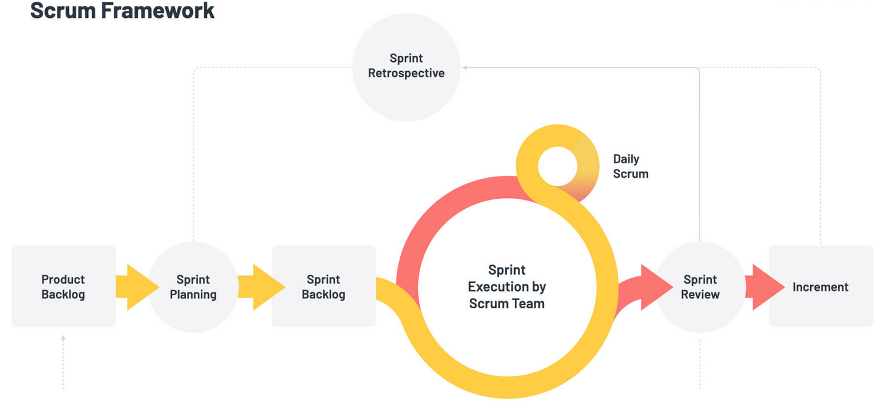
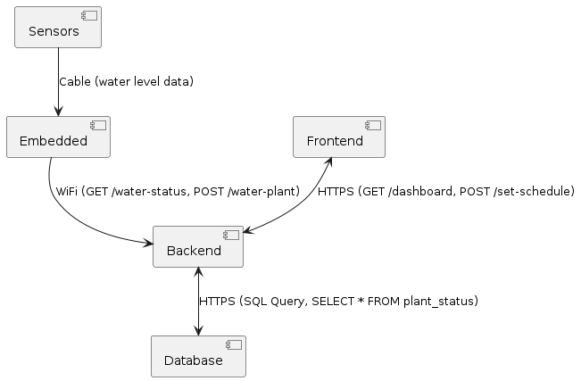
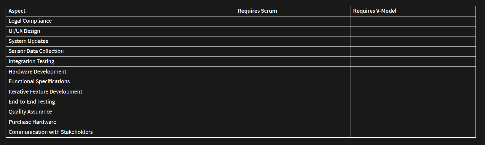

Welcome
Software Engineering in Industry 4.0 Ecosystems
Course: COMP 293F
Time: 12:30 PM - 01:25 PM on Monday, Wednesday, Friday
Location: Benerd School of Education 208
| Week | Topic | Assignment (Canvas + GitHub) | Project | Comment |
|---|---|---|---|---|
| 1 (Jan 13, 15, 17) | Introduction to Industry 4.0 Ecosystems | Lab 1 + Homework 1 (2w) | ||
| 2 (Jan 22, 24) | Requirements Engineering for Industry 4.0 Applications | Backlog MVP | Holiday on Monday | |
| 3 (Jan 27, 29, 31) | Team Structure for Industry 4.0 Applications | Lab 2 + Homework 2 (2w) | Backlog Complete, Purchase HW ✓ | |
| 4 (Feb 3, 5, 3, 7) | Development Processes in Industry 4.0 | Project Part 1 (4w) | Design UI/UX | |
| 5 (Feb 10, 12, 14) | Architectural Design for Industry 4.0 Applications | Design Architecture | ||
| 6 (Feb 19, 21) | Legal Constraints for Industry 4.0 Applications | Install Servers, CI/CD | Holiday on Monday | |
| 7 (Feb 24, 26, 28) | Testing, Verification, Validation in Industry 4.0 | MVP Implementation | ||
| 8 (Mar 3, 5, 7) | Midterm Preparation | Midterm (Mar 7) | MVP I Release | |
| 9 ( - ) | Holiday Week | |||
| 10 (Mar 17, 19, 21) | Resource Constraints and Sustainability in Industry 4.0 | Lab 3 + Homework 3 (2w), Project Part 2 (4w) | End-to-End Integration | |
| 11 (Mar 24, 26, 28) | Cyber Security in Industry 4.0 Ecosystems | End-to-End Integration | ||
| 12 (Apr 7, 9, 11) | Software Release Process in Industry 4.0 | Lab 4, Homework 4 (2w) | Testing | |
| 13 (Apr 14, 16, 18) | Integrating Artificial Intelligence with Industry 4.0 Ecosystems | Testing | ||
| 14 (Apr 21, 23, 25) | Project Presentation | Project Presentation (15 min) | MVP II Release | |
| 15 (Apr 28) | Final Preparation | Classes End on Tuesday (Apr 29) | ||
| 16 (May 7) | Final (May 7, 10-11 AM) |
Software Engineering in Industry 4.0 Ecosystems
Module 2
Requirements Engineering for Industry 4.0 Applications
Every Software Engineering Starts with Requirements


Requirement
The IoT-enabled system should allow users to rent bikes easily through smart connectivity and real-time tracking
Requirement
The IoT-enabled system should allow registered users to rent a bike by selecting a location using a GPS-enabled app, unlocking the bike via a smart lock, and completing payment seamlessly within three steps
Requirement
Purpose: IoT-Improved Bike Rental System to manage rentals and track customers, bikes, and transactions in real-time
- Track the availability of bikes, including their unique ID, condition, and location using IoT sensors
- Log rental transactions, including bike ID, customer ID, rental start and return time, and battery level (if e-bikes)
- Maintain customer records, including name, contact details, and rental history
- Integrate smart locks for secure bike rentals and returns
- Provide real-time notifications to users about bike condition, availability, and usage stats via the app
Translating Textual/Visual Requirements into Epics
What Are Epics?
Definition: Epics represent high-level requirements that group related features or functionalities.What Are Epics?
Epics are broad categories of work that can be broken down into smaller, actionable tasks or user stories
What an Epic Should Include
- Title: A concise, descriptive name for the epic
- Description: A brief overview of the functionality or goal the epic addresses
- Goals: High-level objectives or outcomes that the epic aims to achieve.
- Related User Stories: A list of smaller tasks or features that contribute to the epic
What Are Epics?
Examples:
- Implement Seamless 3-Step Bike Rental Process
- Real-Time Bike and User Management
Adding User Story Requirements into Epic
What Are User Stories?
Definition: User stories represent small, actionable tasks that describe specific functionality or features from the user’s perspective.What Are User Stories?
User stories are specific features or tasks that can be completed within a short time frame, often within a sprint
What a User Story Should Include
- Title: A short, clear description of the user story
- Description: A brief explanation of the user need and the goal
- Acceptance Criteria: Specific conditions that must be met for the story to be considered complete
Acceptance Criteria
- Definition: Conditions that must be met for a user story or feature to be considered complete
- Purpose: To ensure all requirements are satisfied and the feature works as expected
- Example: "As a user, I should select a bike from a list of available options and proceed to checkout."
- Components:
- Clear and testable conditions
- Defines the scope of functionality
- Helps with validation and verification
User Story Template
As a [user role],
I want to [desired action],
Because [reason or benefit]
User Stories for Bike Rental
- As a registered user, I want to select a bike from available options, Because I want to quickly find a bike that suits my needs
- As a registered user, I want to unlock the bike using a mobile app, Because I want a seamless and keyless rental experience
- As a registered user, I want to complete the payment for bike rental through the app, Because I want to finalize my rental quickly and securely
Adding Implementation Task Requirements into User Stories
Implementation Tasks
Implementation tasks are specific, actionable steps required to complete a user story or feature. They include:
- Breaking down complex features into manageable pieces of work
- Focusing on the technical aspects of development
- Ensuring each task is clear, achievable, and aligned with the project's goals
Translating Epic / User Story / Task Requirements into Issue / Ticket Requirements
Product Backlog
The product backlog is a prioritized list of user stories, features, and tasks that need to be completed for the product. It includes:
- All user stories related to the project
- Prioritized tasks and features based on value and importance
- Items are continuously reviewed and refined throughout development
Translating Epic / User Story / Task Requirements into Code Implementation and Issue / Ticket Requirements
Git Commit Message
git commit -m "Implements #3 - Bike Selection UI"
Types of Requirements
- UI Requirements: Define user interaction and design
- Architecture Requirements: Specify system structure and components
- Database Requirements: Outline data storage and access
- Functional Requirements: Define core features and functionality
- Non-Functional Requirements: Define performance and scalability
- Security Requirements: Protect against unauthorized access
- Performance Requirements: Specify responsiveness and load capacity
- Compliance Requirements: Ensure legal and regulatory adherence
Requirement Priority
- Must Have: Critical features needed for system functionality
- Should Have: Important but non-essential features that can be deferred.
- Nice to Have: Desirable features that can be added if resources allow
Effort Estimation: T-Shirt Size
- Small (S): Low complexity or effort, typically takes a short time
- Medium (M): Moderate complexity, takes a moderate amount of time
- Large (L): High complexity, requires significant effort and time
- Extra Large (XL): Very high complexity, requires substantial time and resources
Effort Estimation: Fibonacci Numbers
- 1: Very low effort, simple task that requires little time
- 2: Low effort, simple task with a bit more time required
- 3: Moderate effort, task that requires a reasonable amount of time
- 5: High effort, more complex task with significant time and resources
- 8: Very high effort, complex task requiring considerable time and resources
- 13: Extremely high effort, very complex task with substantial time and resources
Today: January 22, 2025
- Requirement Gathering
- Requirement Tracebility Matrix
- Dependency Matrix
- Use Case
- Lab 1 and Homework 1
Requirements Gathering
What is needed for the software product?
Requirement Types
- Requirement → High-level need
- Epic → Larger body of work
- User Story → Specific deliverable
- Verification/Validation Ticket → Ensure correctness
- Task → Actionable work item
Getting User Requirements from the Client
- Ask open-ended questions to understand needs
- Use tools like surveys or interviews
- Clarify unclear points to avoid assumptions
- Document the conversation for future reference
Example: CPC/IoT User Requirements
- Req 001: The system shall support remote monitoring of IoT devices via a secure web interface
- Req 002: The IoT devices shall transmit data to the cloud at intervals of 10 seconds
- Req 003: The system shall notify users of critical device status changes within 5 seconds
- Req 004: The IoT platform shall allow for firmware updates over-the-air (OTA)
Process Requirements
Verification
Ensures the product is built as per specifications. ("Are we building the product right?")
Verification in the V-Model
Purpose: Acts as a quality gate to ensure readiness for the next stage
Verification at Each Stage:
- Requirements Analysis → System Design: Verify requirements are clear, complete, and testable
- System Design → Architectural Design: Verify high-level design meets specified requirements
- Architectural Design → Module Design: Verify components align with design goals
- Module Design → Implementation: Verify module designs are correct and implementable
Validation
Confirms the product meets user needs. ("Are we building the right product?")
Horizontal and Vertical Traceability
Test Tickets: Verification
- Ticket ID: #VT-001 Task: Review the system architecture to ensure alignment with requirements
- Ticket ID: #VT-002 Task: Run unit tests to ensure each module meets functionality specifications
- Ticket ID: #VT-003 Task: Perform integration testing to verify interfaces between modules
Test Ticket: Validation
- Ticket ID: #VD-001 | Task: Conduct acceptance testing to verify user needs are met
- Ticket ID: #VD-002 | Task: Perform usability testing for user satisfaction
- Ticket ID: #VD-003 | Task: Validate real-world data processing accuracy
Project
- Requirement: The system must notify user to water plants based on soil moisture levels
- Verification: Ensure sensors capture soil moisture data accurately
- Validation: Confirm plants are watered when soil moisture is below the threshold
Requirement Tracebility Matrix
Requirements Traceability Matrix
| Requirement ID | Requirement | Verification Ticket | Validation Ticket | Verification Method | Validation Method |
|---|---|---|---|---|---|
| REQ-001 | System must measure soil moisture levels | #VT-001 | #VD-001 | Unit Test: Sensor data accuracy | Functional Test: Moisture detection in real soil |
| REQ-002 | System must water plants when moisture is below threshold | #VT-002 | #VD-002 | Integration Test: Sensor-to-actuator response | Acceptance Test: Ensure plants are watered correctly |
| REQ-003 | System must notify users of low water levels in the tank | #VT-003 | #VD-003 | System Test: Notification accuracy | User Test: Validate notifications received |
| REQ-004 | System must allow users to set custom thresholds | #VT-004 | #VD-004 | Interface Test: Threshold input functionality | Usability Test: Confirm thresholds match user input |
Requirement Dependency Matrix
| Requirement | REQ-001 | REQ-002 | REQ-003 | REQ-004 |
|---|---|---|---|---|
| REQ-001 | - | X | X | - |
| REQ-002 | X | - | - | X |
| REQ-003 | X | ? | - | - |
| REQ-004 | - | X | X | - |
| Requirement | REQ-001 | REQ-002 | REQ-003 | REQ-004 |
|---|---|---|---|---|
| REQ-001: Measure soil moisture | - | X | X | - |
| REQ-002: Water plants when moisture is low | X | - | - | X |
| REQ-003: Notify user when water levels are low | X | - | - | - |
| REQ-004: User can set watering thresholds | - | X | X | - |
Logistics Team for IoT Sensor Setup
Requirements for the IoT System
| Requirement | Description |
|---|---|
| REQ-001 | Purchase moisture sensors to detect soil moisture levels |
| REQ-002 | Order Raspberry Pi devices for controlling the system and running the software |
| REQ-003 | Develop system plan for sensor and device integration |
| REQ-004 | Ensure all components meet quality standards for outdoor usage |
| REQ-005 | Test sensors and Raspberry Pi setup for functionality and connectivity |
Horizontal Tickets
- Ticket #LT-001: Purchase Sensors
- Task: Identify, source, and order soil moisture sensors
- Dependencies: None
- Due Date: Jan 30, 2025
- Assignee: Logistics Team
- Ticket #LT-002: Order Raspberry Pi
- Task: Source Raspberry Pi models suitable for integration
- Dependencies: LT-001 (sensors)
- Due Date: Jan 30, 2025
- Assignee: Logistics Team
Horizontal Tickets
- Ticket #LT-003: Develop System Plan
- Task: Plan the integration of sensors and Raspberry Pi into the watering system
- Dependencies: LT-001, LT-002
- Due Date: Feb 5, 2025
- Assignee: Logistics Team
Requirements Dependency Matrix
| Requirement | REQ-001 | REQ-002 | REQ-003 | REQ-004 | REQ-005 |
|---|---|---|---|---|---|
| REQ-001 | - | - | - | - | - |
| REQ-002 | X | - | - | X | - |
| REQ-003 | X | - | - | - | X |
| REQ-004 | - | X | X | - | - |
| REQ-005 | - | - | X | - | - |
Requirements Dependency Matrix
Project: Automated Plant Watering System
| Requirement | REQ-001 | REQ-002 | REQ-003 | REQ-004 | REQ-005 |
|---|---|---|---|---|---|
| REQ-001: Measure soil moisture | - | X | X | - | - |
| REQ-002: Water plants when moisture is low | X | - | - | X | - |
| REQ-003: Notify user when water levels are low | X | - | - | - | X |
| REQ-004: User can set watering thresholds | - | X | X | - | - |
| REQ-005: Test sensors and Raspberry Pi | - | - | X | - | - |
Requirement Traceability Matrix
| Requirement Ticket | LT Task | Verification Tickets | Validation Tickets |
|---|---|---|---|
| REQ-001: Purchase moisture sensors | LT-001: Purchase Sensors | VT-001: Verify sensor functionality | VT-002: Validate sensor accuracy in real-world conditions |
| REQ-002: Order Raspberry Pi devices | LT-002: Order Raspberry Pi | VT-003: Verify compatibility with sensors | VT-004: Validate Raspberry Pi performance under load |
| REQ-003: Develop system integration plan | LT-003: Develop System Plan | VT-005: Verify integration of sensors and Raspberry Pi | VT-006: Validate system flow against project requirements |
| REQ-004: Ensure quality standards for components | LT-004: Ensure Quality Standards | VT-007: Verify component durability and reliability | VT-008: Validate quality compliance with industry standards |
| REQ-005: Test sensors and Raspberry Pi | LT-005: Test Sensors and Raspberry Pi | VT-009: Verify sensors' response to moisture levels | VT-010: Validate system functionality after testing |
Lab 1: Issue Creation and Review
- Create at least 5 issues (only client team can/edit create requirements and epics)
- Client team create one empty dependency and tracebility matrix
- Review all existing issues to ensure they are up-to-date and relevant, comment if not
- Review all existing issues and update the dependency and tracebility matrix
- Focus on creating user stories based on the requirements and epics
- Focus on creating tracebility tickets based on your tickets
- Use Slack for communication to collaborate and ask questions: Join Slack Workspace
- If you are not blocked, start with the implementation (eg logistics)
- Always keep your tickets up-to-date
- Due next Friday, Jan 31
Question?
What is the primary purpose of verification in software development?
- To ensure the product meets user needs
- To verify that the product is built according to specifications
- To test the product in real-world scenarios
- To evaluate the product's market fit
What does a Requirements Traceability Matrix (RTM) help with?
- To track the schedule of the project
- To track how requirements relate to other project artifacts
- To assign tasks to team members
- To calculate project costs
Which of the following best describes an Epic?
- A small unit of work that can be completed in a few days
- A large, high-level unit of work that encompasses several user stories
- A detailed test case
- A requirement defined by the client
What is the main purpose of verification and validation tickets?
- To assign specific tasks to developers
- To ensure that the system meets technical specifications and user needs
- To verify market demand for the system
- To track project expenses
What is the role of tasks in project management?
- They represent high-level goals
- They break down user stories into actionable work items
- They track customer feedback
- They estimate project timelines
Today: January 24, 2025
- Requirement and Standards
- Requirement and Automation
- Status Project
- Lab 1 and Homework 1
Requirement and Standards
Requirement and Standard Diagrams
Standard UML: Component Diagram
- Represents system components and their relationships
- Shows high-level architecture
- Useful for modular design and dependencies
+----------------+ +-----------------+
| Component | ------ | Component 2 |
+----------------+ +-----------------+
Standard UML: Entity Relationship Diagram
- Shows entities and their relationships
- Highlights data structure and constraints
- Commonly used in database design
+------------+ +------------+
| Entity | ------- | Entity 2 |
+------------+ +------------+
PlantUML: Component Diagram
@startuml
[Component 1] --> [Component 2]
@enduml
PlantUML: Entity Relationship Diagram
@startuml
entity "Entity" {
+ID: int
+Name: string
}
entity "Entity2" {
+ID: int
+Details: string
}
"Entity" -- "Entity2"
@enduml
PlantUML Editor
Open PlantUML EditorPlantUML Language Reference Guide
Requirement and Standard Communication
Standard Communication Using Slack
- Use public channels for specific topics
- Keep messages clear and concise
- Use threads for organized conversations
- Set availability status
Public Channel Naming Conventions
- [team]-[topic] format
- [logistics]-wifi-access
Special Use Case Channels
- #all-plant-watering-system for important updates
Slack Communication Standards
- Use @mentions carefully
- Set Slack reminders
- Pin important messages
- Use threads to keep channels organized
Example Public Channels for Teams
- [team-design-ui]-sprint
- [team-architecture]-tech-stack
- [team-embedded]-sensor-data
- [team-frontend]-status
- [team-backend]-api
Adding Team to Profile Name
- Include your team name in your Slack profile
- Format: [name] ([team])
- Example: Dr. Berhe (Quality)
- Helps others quickly identify your role and team
- Improves cross-team communication and collaboration
Slack vs GitHub
- Slack is for **quick communication** and collaboration
- **GitHub** is the **single source of truth** for code, issues, and tasks
- Use Slack for Reviewions, but always refer to GitHub for the most accurate data
- Ensure your code, issues, and progress are tracked directly in GitHub
Slack Task
- Please create one team channel per team
- Please add your team to your handle
Requirement and Automation
GitHub Automation Overview
- Automate repetitive tasks like issue creation, CI/CD pipelines, etc
- Improve productivity and consistency
- Use GitHub Actions to automate workflows
Automating Issue Creation
- Automate issue creation based on events like weekly schedules
- Use workflows to trigger issue creation
- Example: Weekly sprint demo issues
Setting Up GitHub Actions
- Create a workflow file: .github/workflows/automation.yml
- Define the event triggers (e.g., schedule, push)
- Configure actions to automate tasks like issue creation
name: Create Weekly Issue
on:
schedule:
- cron: '0 0 * * 5' # Every Friday
jobs:
create-issue:
...
Slack Integration with GitHub Automation
- Receive GitHub notifications directly in Slack
- Use GitHub's Slack integration to get updates on pull requests, issues, etc
- Automate Slack messages for new issues, commits, and deployments
- Set up GitHub Actions to send custom messages to specific Slack channels
Benefits of GitHub Automation
- Consistency: Automate repetitive tasks
- Efficiency: Free up time for more important tasks
- Collaboration: Keep everyone aligned with automated workflows
- Automation is a Type of Standardization
Automation Task (1/2)
- Please review which tasks can be automated in your team
Automation Task (2/2)
- Please create one task for each automation recommendation
Today: January 24, 2025
- Requirement and Standards ✓
- Requirement and Automation ✓
- Status Project
- Lab 1 and Homework 1
Status Project
Project Team Task
- Please introduce your team
- Assign roles and responsibilities
- Review team goals and deliverables
- Review team structure and technologies to use
- Ensure all team members have access to necessary tools
- Plan first sprint demo tasks for next Friday
Question?
Lab 1 (Jan/31) and Homework 1 (Jan/27)
Module 3
Team Structure for Industry 4.0 Applications
January 27, 2025
- Define team structure in Industry 4.0 systems
- Escalation paths along the V-model
- Explore communication tools for effective collaboration
- Review leadership approaches for managing teams

Conway's Law in Industry 4.0
Conway's Law: "Organizations design systems that mirror their team and communication structures."
- In Industry 4.0, team structures influence the design of interconnected systems
- Well-structured teams enable seamless integration of IoT, AI, and robotics
- Poor communication creates fragmented or inefficient systems


- Cross-functional Teams?
- Modular Teams?
- Product-Oriented Teams?
- Agile/Scrum Teams?
- Hierarchical Teams?
Cross-functional Teams
Team members from different disciplines (hardware, software, data) collaborate in a single team to ensure all aspects of the project are covered from the start. This approach promotes continuous communication and immediate problem-solving
function waterPlants(plant) {
if (plant.needsWater) {
// QA ensured proper moisture checks
water(plant); // Dev implemented watering logic
}
// Product defined watering schedule
logWateringEvent(plant); // UX/UI tracked user interactions
}
Modular Teams
Separate teams are assigned to distinct components (e.g., one for embedded, one for frontend, and one for backend). Regular communication between teams ensures integration and smooth collaboration between modules
Product-Oriented Teams
Organize teams around specific features or outcomes (e.g., automated watering or data analytics). This structure ensures focus and clear ownership of specific deliverables, allowing for targeted development efforts
function waterPlants(plant) {
if (featureFlags.isWateringEnabled) {
if (plant.needsWater) {
water(plant); // Product team feature flag logic
}
} else {
// Feature is disabled, no action taken
console.log("Watering feature is off");
}
logWateringEvent(plant); // Product team tracking
}
Agile/Scrum Teams
Teams work in iterative cycles (sprints), with regular stand-ups and sprint reviews to ensure continuous feedback and collaboration across all parts of the project. This flexible approach allows teams to quickly adapt to changes and feedback
function waterPlants(plant) {
if (sprint3FeatureFlags.isWateringEnabled) {
if (plant.needsWater) {
water(plant); // Sprint 3: Dev tasks for watering logic
}
}
// Sprint 5: Log watering event
sprint5LogWateringEvent(plant); // Sprint 5: QA task to ensure logging
}
Hierarchical Teams
Create a project lead who oversees sub-teams for different components. The lead facilitates communication and integration between sub-teams, ensuring that the overall project vision is aligned with individual component developments
function waterPlants(plant) {
if (managerFeatureFlag.isWateringEnabled) {
if (plant.needsWater) {
water(plant); // Senior Dev writes watering logic
}
} else {
// Feature is turned off, no action taken
console.log("Watering feature is off");
}
// Tracking handled by Product Lead
logWateringEvent(plant);
}
Team Structure & Communication Impact on Software Errors
- Mariner 1 Spacecraft, 1962: Poor communication between engineering teams > Small coding error caused mission failure ($18.5 million)
- The Morris Worm, 1988: Lack of collaboration > Single developer's error led to widespread impact ($10 million)
- Pentium FDIV Bug, 1994: Slow internal communication > Mismanagement of response led to massive costs ($475 million)
- Heathrow Terminal 5, 2008: Poor integration between teams > Misaligned goals led to system failure ($1.4 billion)
Team Structures: Pros and Cons
| Team Structure | Pros | Cons |
|---|---|---|
| Cross-functional Teams |
|
|
| Modular Teams |
|
|
| Product-Oriented Teams |
|
|
| Agile/Scrum Teams |
|
|
| Hierarchical Teams |
|
|
Levels of Communication
- Code Level: Communication through code comments and documentation (e.g., GitHub)
- Ticket Level: Use of issue tracking tools for problem-solving (e.g., Jira, GitLab)
- Team Level: Team communication via chat tools (e.g., Slack, Microsoft Teams)
- Project Level: Project updates and reporting (e.g., Trello, Confluence)
What Do You Recommend?
- What team structures would you implement?
- How would you foster collaboration across different disciplines?
- What tools or methods would you use to improve communication flow?

January 27, 2025
- Define team structure in Industry 4.0 systems ✓
- Escalation paths along the V-model
- Explore communication tools for effective collaboration
- Review leadership approaches for managing teams
Communication and Risks
Team > Communication > ⚠ > Software > Product
- Misunderstanding
- Information overload
- Delays in decision-making
- Disagreement on priorities
- Assumptions and misinterpretation
- Lack of feedback
Team Communication and Escalations
| V-Model Phase | Escalation Responsibility | When to Escalate |
|---|---|---|
| Requirements Analysis | Management | Escalate unclear or incomplete requirements |
| System Design | Architecture | Escalate design inconsistencies or integration risks |
| Implementation | Frontend/Backend/Embedded | Escalate coding errors, unresolved bugs |
| Unit Testing | Testing | Escalate failed unit tests or code issues |
| Integration Testing | Quality | Escalate integration issues, non-functional components |
| System Testing | Testing | Escalate system-wide failures or unexpected behavior |
| Acceptance Testing | Client | Escalate client acceptance concerns or issues |
| Escalation Level | Responsibility | When to Escalate |
|---|---|---|
| 1 | Management | Escalate blockers and resource allocation issues |
| 2 | Quality | Escalate incomplete features, unresolved bugs, or missed deadlines |
| 3 | Algorithms | Escalate logic errors, performance issues in algorithms |
| 4 | Architecture | Escalate issues related to tech stack, integration or design |
| 5 | Embedded | Escalate hardware/software integration issues |
| 6 | Backend | Escalate API or data processing errors |
| 7 | Frontend | Escalate UI/UX issues, display bugs or broken features |
| 8 | Testing | Escalate test failures, unresolved issues from QA |
| 9 | Sensor | Escalate sensor failures or issues with sensor integration |
| 10 | Logistics | Escalate delays in hardware procurement or availability |
| 11 | Client | Escalate client feedback, product usage concerns |
| 12 | DevOps | Escalate build/deployment pipeline failures |
Reduce Escalation - Norming
- Standard GitHub Issues: Clear issue templates for consistent tracking
- Standard UML Diagrams: Use of consistent symbols and notations
- Standard Slack Communication: Defined channels, response times, and format
- Standard Code Review Process: Use of guidelines and templates for reviews
- Standard Documentation Format: Consistent file structure, naming conventions
- Standard Code Workflow: Automate unit testing and release
Reduce Escalation - Performing
- Routine communication and team harmony
- Automate Code Workflow: Unit testing and release
January 27, 2025
- Define team structure in Industry 4.0 systems ✓
- Escalation paths along the V-model ✓
- Review leadership approaches for managing teams
January 29, 2025
- Team Building and Listening
- Refine Product Backlog
Homework 1 - Rank ChallengFes
Biggest Challenge: Lack of adequate skill sets
Backlog Refinement
- Review and prioritize issues
- Clarify requirements and scope
- Break down tasks for implementation
January 31, 2025
- Review Team Structure
- Refine Product Backlog
- Sprint #1 Demo
Module 4
Development Processes in Industry 4.0
February 3, 2025
- Practice Questions
- Scrum – An Incremental and Iterative Agile Framework
- V-Model – A Sequential Development Model
- Status Plant Watering Planning Project
Scrum vs V-Model for IoT Plant Watering System
| Aspect | Requires Scrum | Requires V-Model |
|---|---|---|
| Legal Compliance | ||
| UI/UX Design | ||
| System Updates | ||
| Sensor Data Collection | ||
| Integration Testing | ||
| Hardware Development | ||
| Functional Specifications | ||
| Iterative Feature Development | ||
| End-to-End Testing | ||
| Quality Assurance | ||
| Purchase Hardware | ||
| Communication with Stakeholders |
According to Conway’s Law, how do software systems tend to be structured?
- Based on the most efficient architecture, regardless of the organization
- According to the communication structure of the organization that designs them
- In a way that prioritizes user experience over internal constraints
- Completely independent of the organization’s structure
During the "Norming" stage in Tuckman’s team development model, how do teams establish stability?
- By continuing to challenge roles and authority
- Through the use of agreed-upon standards, guidelines, and processes
- By operating independently without requiring structured collaboration
- By completing tasks without a need for further team alignment
How are requirements structured in Software Engineering?
- Epics → User Stories → Tasks
- Detailed specifications first
- Tasks first, then epics
- Epics are not used
What generally comes first in Software Engineering?
- User Stories
- Implementation
- Requirements
- Epics
- Testing
What is a unique challenge for IoT/CPS software?
- High data security requirements
- Integration with legacy systems
- Power consumption optimization
- Large and distributed teams
- All of the above
Which team structure is most likely to have written this code?
- Specialized developers team
- Cross-functional team (e.g., IoT, backend, data analysis)
- Management-driven team
- Single developer
function processHydrationData(data) {
let validData = [];
data.forEach(entry => {
if (
entry.isValid() &&
entry.humidityLevel > 20 &&
entry.humidityLevel < 80) {
validData.push(entry);
}
});
return validData;
}
February 3, 2025
- Practice Questions ✓
- Scrum – An Incremental and Iterative Agile Framework
- V-Model – A Sequential Development Model
- Status Plant Watering Planning Project
Scrum – An Incremental and Iterative Agile Framework
Agile Manifesto
- 2001: Agile Manifesto created by 17 developers in Snowbird, Utah
- 2001: 12 Agile principles introduced alongside the manifesto
- 2011: Minor updates focused on technical excellence and sustainable development
Sprint Planning
- Define the sprint goal
- Review and select items from the product backlog
- Break down selected items into smaller tasks
- Estimate effort and assign tasks
Daily Scrum
- Team members share what they did yesterday
- Discuss what they'll work on today
- Identify any blockers or issues
Sprint Review
- Present completed work to stakeholders
- Gather feedback from the team and stakeholders
- Update product backlog based on feedback
Sprint Retrospective
- Discuss what went well during the sprint
- Identify areas for improvement
- Make a plan to improve processes for the next sprint
Backlog Refinement
- Review and prioritize backlog items
- Break down large backlog items into smaller, manageable tasks
- Ensure backlog items are well-defined and ready for the next sprint
Product Owner
- Defines the product backlog
- Prioritizes backlog items based on business value
- Acts as a liaison between stakeholders and the development team
- Ensures the team works on the most valuable tasks first
Scrum Master
- Facilitates Scrum ceremonies (e.g., Daily Scrum, Sprint Review, Sprint Retrospective)
- Helps remove blockers and impediments for the team
- Ensures adherence to Scrum practices and principles
- Coaches the team on continuous improvement
Development Team
- Collaborates to complete work defined in the sprint backlog
- Self-organizes to determine how best to accomplish work
- Provides updates during the Daily Scrum
- Delivers high-quality, working increments of the product
Stakeholders
- Provide feedback on product increments
- Help prioritize features and functionality
- Ensure the product meets business objectives and customer needs
V-Model – A Sequential Development Model
Limitations of Agile Scrum
- Requires constant collaboration, which can be challenging in distributed teams
- Frequent changes in requirements can lead to scope creep if not managed well
- May be difficult to estimate time and costs due to iterative cycles
- Relies heavily on a skilled team; less experienced members may struggle
- Can face challenges with integration as the product evolves incrementally
Why V-Model for End-to-End Verification and Validation?
- The V-Model is more suited for projects with fixed requirements, such as regulatory or safety-critical systems
- Focuses on verification and validation, which might conflict with Agile's emphasis on flexibility and change
- Rigid planning process ensures consistency and structured testing but may lack room for frequent iteration
- Contradicts Agile principles by emphasizing upfront planning over adaptability to changing requirements
- Ideal for projects where exhaustive testing and validation against initial requirements are critical
Chronology of the V-Model
- 1980s: The V-Model concept emerges as a response to the limitations of the Waterfall Model
- 1990s: Formalization of the V-Model as a software development methodology for structured, sequential processes
- 2000s: Widespread adoption in safety-critical systems (e.g., aerospace, automotive). Focus on verification and validation
- 2010s: V-Model adapted for Agile environments, blending flexibility with structured testing
- 2020s: Continued relevance in industries requiring high levels of validation and regulation (e.g., healthcare, finance)
Stakeholders in the V-Model
- Project Manager: Ensures adherence to timelines, budget, and scope throughout the development process
- System Architect: Designs the overall system architecture and ensures integration between development and testing phases
- Development Team: Responsible for implementing system components and performing unit testing as per the V-Model process
- Quality Assurance (QA) Team: Focuses on verification and validation activities, ensuring that each stage meets quality standards
- End Users: Provide requirements and feedback, ensuring the system meets their needs during validation and testing phases
- Regulatory Bodies (for critical systems): Ensure compliance with regulatory standards, especially during validation and testing phases
Scrum vs V-Model for IoT Plant Watering System
| Aspect | Requires Scrum | Requires V-Model |
|---|---|---|
| Legal Compliance | ||
| UI/UX Design | ||
| System Updates | ||
| Sensor Data Collection | ||
| Integration Testing | ||
| Hardware Development | ||
| Functional Specifications | ||
| Iterative Feature Development | ||
| End-to-End Testing | ||
| Quality Assurance | ||
| Purchase Hardware | ||
| Communication with Stakeholders |
Scrum vs V-Model for IoT Plant Watering System
| Aspect | Requires Scrum | Requires V-Model |
|---|---|---|
| Legal Compliance | Ensured through regulatory testing and verification | |
| UI/UX Design | Developed incrementally in sprints based on feedback | Defined at the start, no major changes during development |
| System Updates | Iterative updates based on user feedback and testing | Updates are planned and finalized during the testing phase |
| Sensor Data Collection | Handled incrementally in sprints, with testing at each phase | Specifically defined during requirements phase and verified in testing |
| Integration Testing | Tested continuously with each sprint cycle | Performed after development, with verification steps in the V phase |
| Hardware Development | Prototypes developed and tested during sprints | Hardware specification created early and tested at the end |
| Functional Specifications | Developed iteratively, refined during each sprint | Fully defined at the start and validated during testing |
| Iterative Feature Development | Incremental feature delivery, prioritizing immediate needs | Defined upfront, with all features designed and tested before deployment |
| End-to-End Testing | Tested throughout the development cycle | Tested at the end of the development cycle in the validation phase |
| Quality Assurance | Ongoing throughout sprints, with continuous feedback loops | Tested at the end of the development phase, following strict requirements |
| Purchase Hardware | May be managed during the sprint as necessary | Planned and acquired early, before development begins |
| Communication with Stakeholders | Frequent communication through Slack and regular sprint reviews | Communicated mainly at the start and end of the development cycle |
💡Scrum is ideal for managing iterative and independent tasks in our IoT Plant Watering System project, such as feature development, sensor integration, and system design
💡The V-Model is more rigid, following a sequential flow where system critical requirements are verified and validated before proceeding, ensuring that the system meets all specifications and requirements before deployment
February 5, 2025
- Practice Questions
- Feature Branch Workflow
- Gitflow Workflow
- Forking Workflow
How do we align SWE and Code Process?
Comparing Git Workflows
- GitFlow
- Forking Workflow
- Feature Branch Workflow
GitFlow
GitFlow

GitFlow Workflow with Submodules
git submodule add backend cd backendgit checkout developgit add git commit -m "[ticket number] Implemented feature API v2"git push origin developMerge Develop into Main for Release
git checkout maingit pull origin maingit merge developgit push origin mainRelease Workflow with Version Tag
git tag -a v1.0.0 -m "Release version 1.0.0"git push origin v1.0.0Mapping Git Workflow to Agile Workflow
- Develop Branch → User Stories + Tasks
- Main Branch → Epic or MVP (Set of User Stories)
GitFlow Workflow Benefits
- Clear separation of stable production code (`main`) and development work (`develop`)
- Supports continuous integration and proper versioning
- Helps manage releases and hotfixes efficiently
GitFlow
- Feature branches for isolated development
- Hotfix branches for urgent fixes
- Best for structured release cycles
Forking Workflow
Forking Workflow

Fork vs Branch
- Fork:
- Creates a **copy** of the repository under your own GitHub account
- Allows **full independence** from the original repository
- Typically used for **open-source contributions**
- Requires a **pull request (PR)** to merge changes into the original repository
- Branch:
- Creates a **sub-branch** within the same repository
- Shares the **same repository history** and settings as the original branch
- Used for **working on features, bug fixes, etc.** in the same codebase
- Can be merged back directly into the main branch without a PR (if within the same repository)
Forking Workflow
- Pull requests for controlled integration
- Great for open-source and external collaboration
- Main repo remains clean and stable
Forking Workflow with Submodules
git submodule add backend cd backendgit clone cd git checkout developgit add git commit -m "[ticket number] Implemented feature API v2"git push origin developPull Request (PR) to the Main Repository
git checkout developgit pull origin developgit merge upstream/developgit push origin developMerge Pull Request and Tag Release Version
git checkout maingit pull origin maingit merge developgit push origin maingit tag -a v1.0.0 -m "Release version 1.0.0"git push origin v1.0.0Mapping Forking Workflow to Agile Workflow
- Forked Repository's Develop Branch → User Stories + Tasks
- Main Repository's Develop Branch → Integration of multiple User Stories
- Main Branch → Epic or MVP (Set of User Stories)
Forking Workflow Benefits
- Facilitates collaboration across multiple contributors
- Ensures contributors don’t have direct access to the main repository
- Clear separation between contributors' work and the main codebase
Feature Branch Workflow
Feature Branch Workflow

Feature Branch Workflow with Git Submodules
git submodule add backend cd backendgit checkout feature-api-v2git add git commit -m "[ticket number] Implemented feature API v2"git push origin feature-api-v2Feature Branch Workflow with Git Submodules
git checkout developgit pull origin developgit merge feature-api-v2git push origin developFeature Branch Workflow with Git Submodules
git tag -a v1.0.0 -m "Release version 1.0.0"git push origin v1.0.0git checkout developgit pull origin developgit merge maingit push origin mainMapping Git Workflow to Agile Workflow
- Feature Branch → User Story + Tasks
- Main Branch → Epic or MVP (Set of User Stories)
Feature Branch Workflow
- Frequent merges to the develop branch
- Encourages continuous integration
- Good for agile teams and rapid iteration
- Supports enable and disable of features flags
Question?
Mapping V-Model & Scrum to Git Workflows
| V-Model | Scrum | |
|---|---|---|
| GitFlow | + Main & Develop reflect structured phases | + Feature branches for iterative development |
| Forking | + Forks represent separate validation environments | + Pull requests enable collaborative sprint integration |
| Feature Branch | + Branches align with specific verification steps | + Short-lived branches support rapid iteration |
Proposal: One Repository
git init main-repogit submodule add embedded git submodule add backend git submodule add frontend git add git commit -m "Added submodules"git push origin mainWhat do you recommend?
GitFlow - Forking - Feature BranchPlease prepare sprint #2 demo slides for Friday
Team Project Part 1
Question?
- What is the primary purpose of GitFlow in version control?
- What does the "develop" branch represent in GitFlow?
- When should a release branch be created in GitFlow?
- Which GitFlow branch is used for hotfixes?
- What is the purpose of the "main" branch in GitFlow?
- What happens when a feature branch is merged in GitFlow?
- What is the main benefit of the V-Model over the Waterfall model?
- In the V-Model, which phase corresponds to Unit Testing?
- What is the primary focus of the Validation phase in the V-Model?
- What is the role of the Scrum Master in Scrum?
- Which Scrum event is designed to review and adapt the sprint?
- What is the purpose of the Product Backlog in Scrum?
- How does GitFlow integrate with Scrum's iterative development process?
- What is the relationship between GitFlow's release branch and Scrum's sprint?
- When should feature branches be merged in a Scrum + GitFlow workflow?
February 7, 2025
- Development Processes in Industry 4.0
- Course Project - Feature Branch Workflow
- Course Project - Ticket / Workflow Integration/Automation
- Course Project - Sprint #2 Demo
- Practice Questions
Development Processes in Industry 4.0

Development Processes in Industry 4.0
Development Processes in Industry 4.0
| Aspect | Apply Scrum | Apply V-Model |
|---|---|---|
| Legal Compliance | After requirements phase | During requirements phase |
| UI/UX Design | Minor changes | Major requirements |
| System Updates | As early as possible | Implementation phase |
| Sensor Data Collection | As early as possible | Implementation/testing/production phase |
| Integration Testing | As early as possible | Testing phase |
| Hardware Development | As early as possible | Implementation phase |
| Functional Specifications | Minor function changes at any phase | At requirements phase |
| Iterative Feature Development | Minor feature changes at any phase | At requirements phase |
| End-to-End Testing | As early as possible | Testing/production phase |
| Quality Assurance | Every sprint | Testing/production phase |
| Purchase Hardware | As early as possible | Implementation phase |
| Communication with Stakeholders | Weekly at sprint demo | System testing phase |
February 7, 2025
- Development Processes in Industry 4.0 ✓
- Course Project - Feature Branch Workflow
- Course Project - Ticket / Workflow Integration/Automation
- Course Project - Sprint #2 Demo
- Practice Questions
Feature Branch Workflow
Course Project - Feature Branch Workflow
- Create feature branch for each user story
- Avoid feature branch for epics or tasks
- Feature branch must start with "feature-ticket-"
- Push to main branch through pull request review
Step 1
Please start visual studio
Step 2
git clone https://github.com/SE4CPS/PlantWaterSystem.git
Step 3
git checkout -b feature-ticket-123-add-refresh-button
Step 4
git commit -m "Added flower data refresh functionality"
Step 5
git push origin feature-ticket-123-add-refresh-button"
Step 6
GitHub Pull RequestsFebruary 7, 2025
- Development Processes in Industry 4.0 ✓
- Course Project - Feature Branch Workflow ✓
- Course Project - Ticket / Workflow Integration/Automation
- Course Project - Sprint #2 Demo
- Practice Questions
Course Project - Ticket / Workflow Integrating
Performing through automated ticket closing
Git Commit Close Ticket Example
git commit -m "Closes #123: Added flower data refresh functionality"
Git Commit Close Ticket Example
git commit -m "Fixes #123: Added flower data refresh functionality"
git commit -m "Resolves #123: Added flower data refresh functionality"
Fixes vs. Resolves in GitHub Commits
- Fixes #123: Used when the commit directly addresses a bug or issue
➡️ The issue is automatically closed when merged - Resolves #123: Used for improvements or non-bug-related improvements
➡️ The issue is closed when merged, but it implies a major resolution rather than just a bug fix
Module 5
Architectural Design for Industry 4.0 Applications
February 10, 2025
- Introduction to Software Architecture
- Architectural Styles and Patterns
- Quality Attributes in Software Architecture
- Software Architecture Design Process
- Case Study: Monolith vs. Microservices
- Practice Questions
What is Software Architecture?
Software architecture represents a shared understanding among developers of the system's design
Ralph Johnson, "Software Architecture: A Shared Understanding"What is Software Architecture?
The decisions you wish you could get right early in a project...
Ralph Johnson, "Software Architecture: A Shared Understanding"What is Software Architecture?
Architecture defines the application boundaries by specifying which components belong to the system and which are external.
What is Software Architecture?
- Modularity: Breaking the system into smaller, manageable components
- Separation of Concerns: Isolating functionalities to avoid interdependencies
- Scalability: Designing the system to accommodate growth in traffic or data volume
- Maintainability: Ensuring the system is easy to update and fix
- Performance: Optimizing for responsiveness and efficiency
What is Software Architecture?
- Programming Language: Choosing the language that fits system requirements (e.g., performance, scalability)
- Database: Deciding between SQL vs. NoSQL, and selecting the appropriate database system
- Framework: Selecting frameworks that align with system needs (e.g., web frameworks, microservices)
- Communication Protocols: Deciding between REST, gRPC, or WebSockets for inter-component communication
- Security: Choosing encryption methods and authentication strategies
- Cloud Infrastructure: Deciding whether to use on-premise or cloud-based services (e.g., AWS, Azure)
- Deployment Strategy: Deciding between monolithic or microservices-based deployment
- Caching Strategy: Selecting caching mechanisms to improve performance (e.g., Redis, Memcached)
- API Design: Defining the structure and style of APIs (e.g., RESTful, GraphQL)
- Component Structure (IoT Embedded): Deciding the architecture of hardware components, sensor interfaces, etc
Architectural Styles
- API-First: The API is designed first, guiding all system components and fostering system integration
- Feature Toggles: Enables feature management and experimentation without deploying new code
- Layered Architecture: Organizes software in layers: presentation, business, and data access, promoting easy system integration
- Microservices: Breaks the system into smaller, independent services that interact over APIs
- Event-Driven Architecture: The system reacts to events that trigger processes or communication
- Client-Server: Separates the client (user interface) and server (data processing/storage) to improve scalability and maintainability
API First - Foster System Integration
A RESTful API (Representational State Transfer) is a set of guidelines for building web services that interact over HTTP, using a stateless architecture and standard HTTP methods (GET, POST, PUT, DELETE) to perform operations
- Stateless: No client context is stored on the server between requests
- Uniform Interface: Consistent structure for requests and responses
- Client-Server: Separation of concerns, allowing independent evolution
- GET: Retrieve data from the server
- POST: Submit data to the server
- PUT: Update an existing resource
- DELETE: Remove a resource
In REST, resources are represented by URLs. These URLs should be descriptive, hierarchical, and correspond to the underlying data or object. Example: /users/{id} to access a specific user
Each request from the client to the server must contain all the information needed to understand and process the request. The server does not store any client context between requests
RESTful APIs commonly use JSON (JavaScript Object Notation) to exchange data, offering a lightweight and human-readable format for data transfer
RESTful APIs use standard HTTP status codes to indicate the success or failure of an API request. Example: 404 for "Not Found," 200 for "OK," 400 for "Bad Request."
RESTful APIs often use token-based authentication, such as OAuth or JWT (JSON Web Tokens), to ensure secure communication between clients and servers
RESTful APIs can improve performance through caching mechanisms like HTTP cache headers, which store responses to reduce redundant requests
- Use nouns for resource names (e.g.,
/users) - Ensure consistency in naming conventions
- Limit the number of HTTP methods per resource
- Provide clear error messages and status codes
REST API Endpoints First
REST API Endpoints
GET /api/flowers
Retrieves all flowers' watering status.
GET /api/flowers/<flower_id>
Retrieves a specific flower's watering status by ID.
PUT /api/flowers/<flower_id>
Updates the watering status of a specific flower by ID.
REST API Endpoints (Users)
GET /api/users
Retrieves all users' data.
GET /api/users/<user_id>
Retrieves a specific user's data by ID.
PUT /api/users/<user_id>
Updates a specific user's data by ID.
Feature Toggles - Foster System Integration
Feature Toggles (often also referred to as Feature Flags) are a powerful technique that allows teams to modify system behavior without changing code. By enabling or disabling specific features, teams can control which functionality is available in a live environment without deploying new code. This technique enables easier A/B testing, gradual rollouts, and quick rollback in case of issues.
Feature Toggles
- Modify system behavior without code changes
- Enable/Disable features in production
- Facilitate A/B testing and feature rollouts
- Quickly rollback features if needed

Feature Toggles for Plant Watering System
Feature Toggles (also known as Feature Flags) allow us to modify system behavior without changing the code. In this example, we use feature toggles to control different features of the plant watering system.
class FeatureToggles {
constructor() {
this.toggles = {
"automatic_watering": false,
"send_alerts": false,
"log_watering_activity": false
};
}
isEnabled(feature) {
return this.toggles[feature] || false;
}
enableFeature(feature) {
this.toggles[feature] = true;
}
disableFeature(feature) {
this.toggles[feature] = false;
}
}
const featureToggles = new FeatureToggles();
if (featureToggles.isEnabled("automatic_watering")) {
console.log("Watering plants automatically...");
} else {
console.log("Automatic watering is disabled.");
}
if (featureToggles.isEnabled("send_alerts")) {
console.log("Sending watering alerts...");
} else {
console.log("Alert sending is disabled.");
}
Why Feature Toggles are Important for IoT and CPS?
- Enable testing of features without affecting the entire system
- Quick rollback of features in case of failures or issues in real-time environments
- Control feature availability, enabling updates without requiring downtime
- Flexible features based on context or sensor data
How to Start with Feature Toggles
- Identify which features need toggling based on their risk, complexity, and deployment requirements
- Integrate a feature toggle management system into your codebase
- Define clear naming conventions for feature toggles to keep track of different features and environments
- Use a gradual rollout strategy, starting with a small group of users or devices before full deployment
Layered Architecture - Sensor Data Quality First
Layered Architecture Overview
- Organizes systems into distinct layers, each with a specific responsibility
- Improves modularity and separation of concerns
- Common layers: Presentation, Application, Business Logic, Data Access, and Database
- Each layer communicates with the adjacent one, simplifying the design
Layered Architecture Overview
- Improve maintainability and scalability (of some layers)
- Clear division of responsibilities between layers
- Ease of testing by isolating components
- Flexibility for layer substitution (e.g., swapping the database layer)
- Limits supports parallel development by teams on different layers
Layered Architecture Structure
| Layer | Responsibilities |
|---|---|
| Sensor | Collects data from the physical environment (e.g., water level, temperature) |
| Operating System | Manages hardware resources and provides basic services for the embedded system |
| Presentation | Handles user interface, user input |
| Application | Handles business logic, request routing |
| Business Logic | Defines the core operations and services |
| Data Access | Handles communication with data sources, APIs |
| Database | Stores persistent data and ensures data consistency |
Layered Architecture and IoT Systems
- Separation of physical devices and logic improves flexibility
- Simplifies integration of different IoT components (e.g., sensors, databases)
- Reduces complexity in managing communication between devices and backend systems
- Ensures that the system can evolve (e.g., adding new features or devices)
- Improves debugging and fault isolation by focusing on one layer at a time
Quality Attributes in Software Architecture
| Attribute | Description |
|---|---|
| Performance | System's responsiveness and resource usage efficiency |
| Scalability | Ability to handle increased load by scaling resources |
| Reliability | System's ability to operate without failure over time |
| Maintainability | Ease of making changes to the system, fixing bugs, and adding features |
| Security | Protection from unauthorized access, attacks, and vulnerabilities |
| Usability | Ease of use for end users and administrators |
| Accessibility | Ensuring the system is usable by people with disabilities |
Software Architecture Design Process
| Step | Description |
|---|---|
| 1. Requirement Gathering | Understand the system’s functional and non-functional requirements |
| 2. Architecture Planning | Define the high-level structure, components, and relationships |
| 3. Design Components | Design individual system components and their interactions |
| 4. Evaluate Design Alternatives | Analyze different architectural styles and patterns to choose the best fit |
| 5. Prototyping | Create a prototype or proof-of-concept to validate the design |
| 6. Document Architecture | Document the architecture using diagrams and descriptions for future reference |
| 7. Review and Refinement | Review the architecture with stakeholders and make necessary refinements |
The Flower Care app integrates sensors to collect real-time data on soil moisture, temperature, and light. Users can monitor plant health, set watering schedules, and receive alerts. The app requires scalable, fault-tolerant architecture for handling growing data and user interactions. Key options include monolithic (simple, all-in-one), layered architecture (separation of concerns), microservices (independent services for scalability), and event-driven architecture (real-time, event-based processing). Which architecture is optimal for performance, scalability, and maintainability?
1. What is the main advantage of using microservices architecture?
- Option A: Improved performance
- Option B: Independent scaling of services
- Option C: Reduced complexity
- Option D: Easier to deploy
2. Which architecture pattern focuses on the separation of concerns and layers?
- Option A: Microservices
- Option B: Layered architecture
- Option C: Event-driven architecture
- Option D: Client-server architecture
3. In which architecture is the system organized into independent, loosely-coupled components that communicate via events?
- Option A: Microservices
- Option B: Event-driven architecture
- Option C: Layered architecture
- Option D: Monolithic architecture
4. Which architectural style is best suited for applications that require high performance and direct client interaction?
- Option A: Monolithic
- Option B: Microservices
- Option C: Client-server
- Option D: Event-driven
5. Which of the following is a key characteristic of a layered architecture?
- Option A: All layers share the same database
- Option B: No communication between layers
- Option C: Layering increases complexity
- Option D: Separation of concerns between layers
February 12, 2025
- Data Architecture First
- Error-Resilient/Security Architecture First
- Practice Questions
Why prioritize Data Pipeline before Software Architecture?
- Data is the foundation of decision-making and AI models
- Software architecture depends on well-structured data flows
- Scalable data pipelines prevent downstream bottlenecks
- Ensuring high-quality data improves system reliability
How Data Pipeline Architecture improve scalability?
- Supports distributed storage and processing
- Enables real-time and batch data handling
- Reduces dependency on monolithic systems
- Allows independent scaling of data and compute layers
Why good data flow critical before software architecture?
- Clean, structured data prevents application inefficiencies
- Ensures smooth integration across multiple services
- Reduces rework caused by poor data management
- Provides a single source of truth for all applications
Data Pipeline
Raw Sensor Data | Device +----+----------+------+---------+ | id | sensor | water_hydration | +----+----------+----------------+ | 1 | SensorA | 45 | +----+----------+----------------+ +----+----------+------+---------+ | id | sensor | water_hydration | +----+----------+----------------+ | 2 | SensorB | 38 | +----+----------+----------------+ +----+----------+------+---------+ | id | sensor | water_hydration | +----+----------+----------------+ | 3 | SensorC | 40 | +----+----------+----------------+
Data Lake
+----+----------+-----------+
| id | raw_data | timestamp |
+----+----------+-----------+
| 1 | {JSON} | 12:01:30 |
| 2 | {JSON} | 12:02:10 |
| 3 | {JSON} | 12:02:10 |
| 1 | {JSON} | 09:08:10 |
| 2 | {JSON} | 11:10:10 |
| 3 | {JSON} | 01:06:10 |
| 1 | {JSON} | 04:05:10 |
| 2 | {JSON} | 12:04:10 |
| 3 | {JSON} | 01:06:10 |
| 1 | {JSON} | 04:05:10 |
| 2 | {JSON} | 12:04:10 |
| 3 | {JSON} | 01:06:10 |
| 1 | {JSON} | 04:05:10 |
| 2 | {JSON} | 12:04:10 |
+----+----------+-----------+
Data Warehouse +----+----------+--------------+ | id | sensor | avg_hydration | +----+----------+--------------+ | 1 | SensorA | 46 | | 2 | SensorB | 39 | +----+----------+--------------+
Dashboard +----------+------------------+ | Sensor | Avg Hydration (%)| +----------+------------------+ | SensorA | 46 | | SensorB | 39 | +----------+------------------+
Database Pipeline
Raw Sensor Data | SQLite
Data Lake | MongoDB
Data Warehouse | MySQL
Dashboard | IndexedDB
Caching vs Persisting
Sensor Cache | SQLite
Lake Persisted | MongoDB
Warehouse Cache | MySQL
Dashboard Cache | IndexedDB
Full Loading
- Loads all data at once
- Higher initial load time
- Useful for smaller datasets or when all data is needed
Partial Loading
- Loads only a subset of data
- Faster initial load time
- Useful for large datasets or when only a part of data is required
Full Loading and/or Partial Loading
Sensor Cache | SQLite
Lake Persisted | MongoDB
Warehouse Cache | MySQL
Dashboard Cache | IndexedDB
Loading Triggers
| Trigger Type | Description |
|---|---|
| Time-based | Data is loaded at specific time intervals (e.g., every 5 minutes) |
| Event-based | Data is loaded when a specific event occurs (e.g., user action, system change, value changed) |
Relevant NIST Publication
NIST IR 8259A: A Profile for IoT SecurityError Handling in IoT Systems (Architecture Perspective)
- Decouple error handling from business logic using middleware layers
- Event-driven architecture for detecting errors in real-time
- Use of centralized logging services for error monitoring
- Fallback mechanisms for fault tolerance and service continuity
Error Logs and Business Logic Components
Business Logic
+------------------------+
| Handle IoT device |
| interactions, data |
| processing, and |
| communication |
+------------------------+
Error Logs
+------------------------+
| Logs errors from |
| Business Logic |
| component, including |
| device failure, |
| performance issues, |
| and system faults |
+------------------------+
Monitoring Infrastructure in IoT Systems (Architecture Perspective)
- Distributed monitoring across IoT devices via a central control plane
- Use of microservices for collecting and processing device health data
- Integration with cloud-based IoT platforms (e.g., AWS IoT, Azure IoT Hub)
- Real-time streaming analytics and alert systems for device performance
Diagnostics in IoT Systems (Architecture Perspective)
- Distributed diagnostics using edge devices for localized analysis
- Automated diagnosis with AI/ML models at the edge or cloud
- Centralized reporting and troubleshooting workflows
- Data-driven insights for root cause analysis of system failures
Over-the-Air (OTA) Updates in IoT Systems (Architecture Perspective)
- Modular firmware design for seamless OTA updates
- Integration of OTA update pipelines within CI/CD systems
- Secure transmission of updates with encryption and integrity checks
- Version control and rollback mechanisms for devices
Review Architecture Design Principles
- Data Architecture First
- Security and Privacy
- Data Integrity
- Feature Toggle
- Monolithic Architecture
- Layered Architecture
February 14, 2025
- Public vs. Private Endpoints in Software Architecture
- Public vs. Private Endpoints Sample Implementation
- Sprint Demo
Public vs. Private/Internal Endpoints in IoT Applications
Public Endpoints
+------------------------+
| Expose data to |
| external clients or |
| third-party services |
| (e.g., weather, |
| monitoring systems) |
+------------------------+
Private/Internal Endpoints
+------------------------+
| Handle sensitive data |
| (e.g., device control, |
| authentication, and |
| configuration) |
| Restricted to |
| internal services and |
| devices |
+------------------------+
Plant Watering App - Public vs. Private/Internal Endpoints
Public Endpoints
+------------------------+
| Provide external data |
| (e.g., weather forecast|
| for plant hydration) |
| Accessible by external |
| users or services (e.g.|
| mobile app, monitoring)|
+------------------------+
Private/Internal Endpoints
+------------------------+
| Manage device control |
| (e.g., soil moisture |
| threshold, water valve |
| activation) |
| Handle authentication |
| and device status |
+------------------------+
Requirements for Authentication
| Authentication Method | Lifetime Option | Description |
|---|---|---|
| UUID | Permanent | UUID remains valid until it is manually revoked or changed |
| UUID | Time-limited | UUID expires after a predefined period, requiring re-authentication |
| Username/Password | Session-based | Valid for the duration of the session, requiring re-authentication after expiration. |
| Username/Password | Time-limited | Expires after a predefined period, and requires re-login to access |
| Username/Password | Multi-factor (MFA) | Requires additional authentication factors after the initial login, often with time-based tokens |
We are considering two endpoints for a sensor data retrieval system. Please propose the appropriate endpoint signatures:
| Parameter | Details |
|---|---|
| Endpoint URL | [Propose URL structure] |
| HTTP Method | [Propose HTTP method] |
| Input | [Propose input parameters] |
| Output | [Propose output format, e.g., JSON] |
Clone and Set Up i40 Repository
- Clone the repository: git clone https://github.com/SE4CPS/i40.git
- Navigate into the project folder: cd i40/architecture
- Install dependencies: npm install
- Start the application: npm start
Sample URL Queries
- User Authentication:
GET http://localhost:3000/auth/user?username=user1&password=password1
Response:{"message": "User user1 authenticated"} - Sensor Authentication:
GET http://localhost:3000/auth/sensor?uuid=UUID-123
Response:{"message": "Sensor UUID-123 authenticated"}
Module 6
Legal Constraints for Industry 4.0 Applications
February 19, 2025
- Introduction to Legal Requirements in IoT
- IoT Safety Regulations
- Privacy Laws & IoT
- RACI Chart for Roles in Legal Compliance
- Hardware & Software & Data Quality Compliance
Why Legal Requirements in Software for IoT?
...to ensure user protection
...how?
...through privacy and safety requirements
Legal Requirements to Protect Users: Privacy Requirements
- GDPR (2018): Requires consent for data collection in the EU
- CCPA (2018): Grants rights to access, delete, and opt-out of data sale in California
- HIPAA (1996): Protects health information, requiring consent for location data sharing in the U.S
- California Consumer Privacy Act (2020): Mandates clear privacy policies in California
- Accountability Regulations (2018): Requires data breach notification within 72 hours in the U.S
privacy requirements impact where the data must be stored
Legal Requirements by Region
- CCPA: User rights to location data in California
- HIPAA: Regulates location data in healthcare, ensuring patient privacy
- GDPR: Strict rules on location data in the EU
Legal Requirements to Protect Users: Safety Requirements
- ISO 26262 (2011): Legal requirement for functional safety in automotive systems
- NHTSA Guidelines (2016): Regulations for testing and reporting on autonomous vehicle safety
- Incident Reporting Regulations (2017): Obligations for timely reporting of accidents and failures
- Liability Regulations (2019): Definitions of liability in accidents involving autonomous vehicles
- IoT Cybersecurity Improvement Act (2020): Security requirements for federal IoT devices
- ISO/IEC 27001 (2013): Framework for managing information security risks
safety requirements impact where the product can run
Plant Watering System Epics
| Priority | Epic | Description |
|---|---|---|
| 1 | Legal Requirements | Ensure compliance with data protection and user privacy laws |
| 2 | User Authentication | Implement secure user login and access control mechanisms |
| 3 | Watering Automation | Automate the watering schedule based on plant needs |
| 4 | Soil Moisture Monitoring | Integrate sensors to monitor soil moisture levels |
| 5 | Mobile Application | Develop a user-friendly app for monitoring and controlling the system |
| 6 | Notifications and Alerts | Send alerts for low moisture levels or system failures |
| 7 | Data Analytics | Analyze watering patterns and plant health for optimization |
legal requirements impact how the product is developed
legal requirements do not prevent software, hardware, or data errors

...what's next?
RACI Chart
| Task | Responsible | Accountable | Consulted | Informed |
|---|---|---|---|---|
| Define Project Scope | Project Manager | Stakeholders | Team Leads | All Team Members |
| Design System Architecture | System Architect | Project Manager | Developers | Stakeholders |
| Implement Sensors | Developers | System Architect | Technicians | Project Manager |
| Test System | QA Team | Project Manager | Developers | Stakeholders |
| Deploy System | IT Team | Project Manager | All Team Members | Stakeholders |
Project managers are often legally accountable
How managers Protect themselves with the help of the V-Model?
- Verify Complete GitHub Issues (epic, user story, etc.)
- Ensure Traceability of Verification and Validation
- Conduct Regular Legal Risk Assessments
- Inform themselves about the product during sprint (regular) demo
- Maintain Comprehensive Documentation
- Establish Clear Roles and Responsibilities
- Set clear standards for software, hardware, and data quality
- Use Version Control for All Artifacts, PL
- Perform Thorough Test Reviews at Each Stage
- Adhere to Relevant Legal and Compliance Standards
RACI Chart by Year
- 1950s: Development of responsibility matrices in project management
- 1960s: Adoption of RACI in project planning
- 1970s: Formalization of RACI for role clarity
- 1980s: Use in large projects, emphasizing compliance and legal roles
- 1990s: Integration into project management frameworks with legal accountability
- 2000s: Widespread adoption, focusing on legal compliance in teams
- 2010s: Digital tools improve role assignment and legal tracking
NB: Waterfall, Scrum, Kanban, do not have these mechanisms...
How?
Example on Hardware & Software & Data Quality Compliance
Hardware Quality
Improve Hardware Quality
- Redundancy: Use multiple sensors (e.g., GPS) for accurate data
- Calibration: Regular calibration of sensors for reliable readings
- Quality Materials: Employ durable components to reduce failure rates
- Environmental Protection: Ensure devices are protected from elements

Software Quality
Software Quality: Input Validation
function validateTemperature(temp) {
if (typeof temp !== "number" || temp < 0 || temp > 100) {
throw new Error("Invalid temperature value");
}
return temp;
}
Software Quality: Error Handling
try {
let data = fetchData();
} catch (error) {
console.error("Data fetch failed:", error.message);
}
Software Quality: Secure Coding
function hashPassword(password) {
return crypto.createHash("sha256").update(password).digest("hex");
}
Software Quality: Avoiding Magic Numbers
const MAX_TEMP = 100;
if (sensorValue > MAX_TEMP) {
alert("Temperature too high!");
}
Software Quality: Code Readability
function calculateWaterNeed(plantType) {
const needs = { cactus: 1, fern: 5, rose: 3 };
return needs[plantType] || 2;
}
Software Quality: Defensive Programming
function getSensorData(sensor) {
return sensor?.read() ?? "No Data Available";
}
Software Quality: Modularization
function fetchData() {
return api.get("/data");
}
function processData(data) {
return data.map(cleanData);
}
Software Quality: Logging
function logEvent(event) {
console.log(`[${new Date().toISOString()}] Event: ${event}`);
}
Software Quality: Testing
- Unit tests ensure individual functions work correctly
- Integration tests validate multiple components together
- Mock data helps simulate real-world scenarios
Software Quality: Documentation
- Use meaningful comments for complex logic
- Follow consistent naming conventions
- Provide API documentation for external integrations
Data Quality
{
"data": [
{
"sensorId": "sensor_003",
"timestamp": "2025-02-19T10:10:00Z",
"moistureLevel": -5,
"temperature": null
}
]
}
{
"data": [
{
"sensorId": "sensor_001",
"timestampInstallation": "2024-05-19T10:00:00Z",
"timestampLastValue": "2025-02-19T10:00:00Z",
"moistureLevel": 45,
"temperature": 22.5,
"status": "active"
}
]
}
{
"data": [
{
"sensorId": "sensor_001",
"location": "Benerd 208",
"timestampInstallation": "2024-05-19T10:00:00Z",
"timestampLastValue": "2025-02-19T10:00:00Z",
"moistureLevel": 45,
"temperature": 22.5,
"batteryLevel": 85,
"signalStrength": -65,
"calibrationDate": "2025-01-10T12:00:00Z",
"status": "active",
"alerts": []
}
]
}
Improving Data Quality with Redundancy
- Redundancy: Using multiple sensors to cross-verify data
- Sensor Fusion: Combining data from different sensors for accuracy
- Error Detection: Implementing algorithms to identify and correct data discrepancies
GPS Sensor Redundancy in Autonomous Vehicles
- Most autonomous vehicles use about 5 GPS sensors
- Each sensor provides location data to ensure reliability
- Redundant GPS data helps maintain accuracy and safety in navigation
Additional Methods to Improve Data Quality
- Regular Calibration: Ensuring sensors are calibrated for precision
- Data Validation: Implementing checks to verify data integrity
- Real-time Monitoring: Continuously assessing sensor performance and data quality
Legally Accountable Roles (Management)
Define internal standards
Improving Quality in IoT
- Quality through standard process definition
- Quality through standard test requirement definition
- Quality through automated compliance checks
- Quality through continuous monitoring and auditing
- Quality through regulatory and legal alignment
Example 1: Upload Unobfuscated Software to all Regions
Example 2: Cautious with test hardware during testing
Example 3: Git push code without pull request
Example 4: Bicycle crash alert algorithms wrong in production
Example 5: GDPR pushed project timeline by a year
February 21, 2025
- Legal impact of Software Updates in IoT
- Legal impact of Software Quality in IoT
- Spring Demo #4
Fuel Injection Software Update
- Manufacturer: Honda
- Issue: Faulty fuel injection software may cause engine stalling
- Affected Vehicles: ~300,000 Honda & Acura models
- Solution: Free software update at dealerships
- More Info
Recalling Certain 2025 R1S and R1T Vehicles for Headlight Issue
- Manufacturer: Rivian
- Issue: Headlight software malfunction
- Affected Vehicles: 2025 R1S & R1T models
- Solution: Over-the-air software update
- More Info
Legal & Safety Impact of Software Updates
- Liability: Manufacturers are accountable if software defects cause accidents
- Regulatory Compliance: Agencies (e.g., NHTSA, EU Commission) enforce mandatory safety updates
- Consumer Protection: Owners have rights to timely fixes and transparency in recalls
- Safety Risks: Delayed or faulty updates may lead to system failures, increasing accident risks
- Data & Privacy: Updates must comply with laws (e.g., GDPR, CCPA) to protect user data
- Case Studies: Past recalls highlight the legal duty to ensure software reliability
Prioritizing Software Updates
- Legal, Safety & Privacy Impact Address compliance, safety risks, and data protection first
- Critical Security Patches Fix vulnerabilities that could be exploited
- Performance & Stability Optimize functionality to prevent failures
- User Experience Improve usability while maintaining reliability
- Feature Improvement Introduce new capabilities without compromising existing systems
- Testing & Deployment Ensure updates are validated before release
Security & Breaking Updates (Legal Impact)
Monitor Security Updates via GitHub
- Automated Monitoring: Use GitHub's Dependabot to track vulnerabilities in dependencies
- Real-Time Alerts: Receive notifications for security updates and fixes
- Seamless Integration: Automatically create pull requests for updates
- Customizable Settings: Configure update frequency and target versions
- Improved Security: Maintain a secure codebase by promptly addressing issues
- More Info
Monitor Breaking Updates via GitHub
- Patch Updates: Small fixes for bugs and security vulnerabilities (e.g., `2.0.1` to `2.0.2`)
- Minor Updates: Add functionality in a backwards-compatible manner (e.g., `2.0.0` to `2.1.0`)
- Major Updates: Introduce significant changes or breaking features (e.g., `2.x.x` to `3.0.0`)
- Legal Considerations: Ensure updates comply with legal standards and user agreements
Managing Breaking Updates with Renovate
- Automated Dependency Updates: Renovate helps automate the process of updating dependencies, including breaking updates
- Version Control: Monitor major version changes to assess impact on your codebase
- Customizable Update Configurations: Define rules for handling breaking updates and set schedules for updates
- Pull Request Generation: Automatically creates pull requests for updates, allowing for review and testing before merging
- Visibility: Keep track of changes and maintain a history of updates to manage legal implications
- More Info
RACI Chart for Monitoring Critical Software Updates
| Task | Responsible | Accountable | Consulted | Informed |
|---|---|---|---|---|
| Define Update Criteria | Project Manager | Stakeholders | Team Leads | All Team Members |
| Monitor Software Dependencies | Developers | Project Manager | System Architect | Stakeholders |
| Assess Impact of Updates | QA Team | Project Manager | Developers | Stakeholders |
| Test Updates | QA Team | Project Manager | Developers | Stakeholders |
| Deploy Updates | IT Team | Project Manager | All Team Members | Stakeholders |
Management Must Prioritize Monitoring and Maintaining Software Updates
Continuous Monitoring Post-Release
- Third-Party Updates: Operating systems, browsers, and libraries are frequently updated by external providers
- Compatibility Issues: Ensure your software remains compatible with the latest versions
- Security Risks: Monitor for vulnerabilities introduced by third-party updates
- Performance Optimization: Address any performance impacts caused by external changes
- User Experience: Maintain a seamless experience for users across different platforms
Automatic Updates
Manual Updates
Ignore Updates
Code Quality and Legal Impact Checklist
- Static Code Checking
- Dynamic Code Checking
- Peer Review Critical Steps
- Roundtable Review
- Automated Testing for Security Vulnerabilities
- Code Coverage Analysis
- Compliance with Coding Standards and Guidelines
- Documentation Review for Legal Requirements
- Continuous Integration and Deployment Practices
- Version Control for Change Tracking
- Regular Training on Legal and Compliance Issues
Legal Compliance Code Review
class PlantWateringSystem:
def __init__(self):
self.user_data = [] # Stores user data without consent
self.water_count = 0 # Tracks number of waterings per day
def collect_user_data(self, user_name, email):
self.user_data.append({'name': user_name, 'email': email}) # No consent
def water_plants(self, amount):
self.water_count += 1
print(f"Watered plants with {amount} liters.")
Legal Compliance Code Review
class PlantWateringSystem:
def __init__(self):
self.user_data = [] # Stores user data without consent
self.sensors = {'sensor1': 0, 'sensor2': 0} # Different sensors
def update_sensor_reading(self, sensor, reading):
self.sensors[sensor] = reading
Legal Compliance Code Review
class PlantWateringSystem:
def __init__(self):
self.user_data = [] # Stores user data without consent
self.last_watered_days = 0 # Days since last watering
def check_watering_interval(self):
# self.last_watered_days
Module 7
Testing, Verification, Validation in Industry 4.0
February 24, 2025
- Testing, Verification, and Validation
- Test Sequences/Levels in the V-Model
- Test-Driven Development in the V-Model
- Test Concept: Arrange, Act, Assert
- Testing Software Frameworks
Testing, Verification, and Validation
Testing
Testing, Verification, and Validation
| Aspect | Verification | Validation | Testing |
|---|---|---|---|
| Definition | Ensures the product is being built correctly according to specifications | Ensures the right product is being built to meet user needs | Checks the actual execution of software to detect defects |
| Focus | Process-oriented (reviews, inspections, static analysis) | End-user requirements and overall functionality | Finding bugs by executing the software |
| When? | Before coding (design, documentation, planning stages) | After implementation but before deployment | During and after development |
| Examples | Code reviews, design reviews, requirement analysis | User acceptance testing (UAT), system testing | Unit testing, integration testing, regression testing |
| Outcome | Ensures the software conforms to design and requirements | Ensures the software meets business needs | Finds defects and ensures software functions correctly |
Test Levels
- Level 1: Unit Testing – Tests individual functions or modules in isolation
- Level 2: Component Testing – Verifies the integration of multiple units within a subsystem
- Level 3: Integration Testing – Ensures correct communication between components
- Level 4: System Testing – Evaluates the complete system for functional/non-functional requirements
- Level 5: Acceptance Testing – Confirms that the system meets client/user expectations
Test Cases
- Level 1: Unit Testing – Function outputs and edge cases
- Level 2: Component Testing – Module interactions and API responses
- Level 3: Integration Testing – Service communication and database checks.
- Level 4: System Testing – Full workflow, UI, and performance
- Level 5: Acceptance Testing – User scenarios and compliance
Test Types
- Unit Testing – Tests individual components for correctness
- Component Testing – Validates interactions between integrated units
- Integration Testing – Ensures combined components work together
- System Testing – Evaluates the complete system's compliance with requirements
- Acceptance Testing – Confirms the system meets user expectations
- Regression Testing – Ensures new changes don’t break existing functionality
RACI Matrix
| Test Type | Developer | Tester | QA Engineer | Management | Client/User |
|---|---|---|---|---|---|
| Unit Testing | R | A | C | I | I |
| Component Testing | R | A | C | I | I |
| Integration Testing | C | R | A | I | I |
| System Testing | - | R | A | I | I |
| Acceptance Testing | - | C | R | I | I |
| Regression Testing | - | R | A | I | I |
Verification
Verification - Are we building the product right?
- Focuses on prevention of defects
- Ensures the product is built correctly according to design specifications
- Involves activities such as reviews, inspections, and static analysis
RACI Chart for Verification
| Verification Activity | Developer | Tester | QA Engineer | Management | Client/User | Requirements Engineer | UI/UX Designer |
|---|---|---|---|---|---|---|---|
| Requirements Review | - | C | A | I | I | R | - |
| Design Review | A | C | - | I | I | - | R |
| Code Review | R | - | C | I | I | - | - |
| Static Analysis | - | R | A | I | I | - | - |
| Test Case Review | - | R | C | I | I | - | - |
Validation
Validation - Are we building the right product?
- Focuses on identifying defects in the final product
- Ensures the product fulfills business requirements
- Involves activities such as user acceptance testing and field testing
RACI Chart for Validation
| Validation Activity | Developer | Tester | QA Engineer | Management | Client/User |
|---|---|---|---|---|---|
| System Analysis Validation | R | - | - | I | - |
| System Design Validation | - | R | - | I | - |
| Component Design Validation | - | - | R | I | - |
| User Acceptance Testing | - | - | - | I | R |
| Field Testing | - | - | A | I | R |
| Final Product Review | - | C | A | I | R |
Testing Sequence Options
Test Case → Implementation → Testing
Implementation → Test Case → Testing
Why TDD and V-Model Match Well
- Quality Assurance: TDD ensures high-quality code through continuous testing
- Validation Focus: V-Model emphasizes validation at each development phase
- Early Feedback: TDD provides immediate feedback, aligning with V-Model's verification approach
AAA Testing Principle
- Arrange: Set up the necessary conditions and inputs for the test
- Act: Execute the functionality being tested
- Assert: Verify that the outcome matches the expected result
AAA Testing Principle
+----------------+ +----------------+ +----------------+
| Input | ---->| Function | ---->| Output |
+----------------+ +----------------+ +----------------+
+----------------+ +----------------+ +----------------+
| Arrange | ---->| Act |----> | Assert |
+----------------+ +----------------+ +----------------+
JavaScript Example
// Arrange: Input data
const a = 2;
const b = 3;
// Act: Function to sum two numbers
function sum(a, b) {
return a + b;
}
// Assert: Test using console.assert
console.assert(sum(a, b) === 5, "Test failed: Expected 5"); // Output: No output if the test passes
Jest Example
// Arrange: Input data
const a = 2;
const b = 3;
// Act: Function to sum two numbers
function sum(a, b) {
return a + b;
}
// Assert: Test using Jest
test('sum adds numbers', () => {
expect(sum(a, b)).toBe(5); // Output: Passes if the sum is correct
});Component Testing Example
// Arrange
const soilMoistureLevel = 20; // Moisture level in percentage
const expectedOutput = "Watering required"; // Expected output
// Act
const result = checkWaterNeed(soilMoistureLevel); // Function to test
// Assert
console.assert(result === expectedOutput, "Test failed: Expected 'Watering required'");
Integration Testing Example
// Arrange
const plant = { type: "Cactus", soilMoisture: 15 };
const expectedMessage = "Cactus needs watering";
// Act
const result = waterPlant(plant); // Function that integrates soil moisture check and watering
// Assert
console.assert(result === expectedMessage, "Test failed: Expected 'Cactus needs watering'");
System Testing Example
// Arrange
const plantData = [{ type: "Fern", soilMoisture: 30 }, { type: "Cactus", soilMoisture: 10 }];
const expectedStatus = "All plants checkeWatering required for 1 plant.";
// Act
const result = manageWateringSystem(plantData); // Function to manage watering for all plants
// Assert
console.assert(result === expectedStatus, "Test failed: Expected 'All plants checked.'");
Common JavaScript Testing Frameworks
- console.assert: Simple built-in assertions --> Documentation
- Jest: Comprehensive testing framework --> Documentation
- Mocha: Flexible framework with multiple assertion libraries --> Documentation
- Chai: Assertion library for BDD and TDD --> Documentation
- Jasmine: BDD framework with clean syntax --> Documentation
- QUnit: Ideal for testing jQuery projects --> Documentation
Check Water Level
function checkWaterLevel(current, required) {
console.assert(current >= required,
`Not enough water! Required: ${required}L, Current: ${current}L`);
}
checkWaterLevel(5, 3); // Passes
checkWaterLevel(1, 3); // Fails
Installing and Testing with Jest
# Install Jest
npm install --save-dev jest
# Create a test file (e.g., sum.test.js)
function sum(a, b) {
return a + b;
}
test('adds 1 + 2 to equal 3', () => {
expect(sum(1, 2)).toBe(3);
});
# Run the tests
npx jest
February 26, 2025
- Testing, Verification, and Validation
- API Testing
- API Documentation
- Client Testing
API Testing
- Validates API functionality, performance, and security
- Ensures API responses match expected outputs
- Involves request-response validation
- Common tools: Postman, JMeter, REST Assured
Types of API Testing
- Functional Testing: Ensures API works as intended
- Performance Testing: Measures API speed and reliability
- Security Testing: Identifies vulnerabilities
- Integration Testing: Ensures API interacts correctly with other systems
API Testing Steps
- Arrange: Define test inputs and expected responses
- Act: Send API requests and capture responses
- Assert: Compare actual vs. expected results
API Testing Tools
- Postman: Manual and automated testing
- JMeter: Performance and load testing
- REST Assured: Java-based API testing
- SoapUI: Functional and security testing
API Testing in the V-Model
- Occurs during integration and system testing phases
- Supports Test-Driven Development (TDD)
- Helps validate API specifications early
- Ensures seamless data exchange between system components
Most Interfaces Are REST Endpoints
- REST (Representational State Transfer) is the dominant API style
- Uses HTTP methods: GET, POST, PUT, DELETE
- Data is exchanged in JSON
- Lightweight, scalable, and stateless architecture
- Common in web services, mobile apps, and IoT systems
Interfaces and Components
+-------------+ REST API +--------------+ Database Queries +-------------+
| Frontend | <-----------> | Backend | <------------------> | Database |
| (Web/Mobile)| | (API, Logic) | | (SQL/NoSQL) |
+-------------+ +--------------+ +-------------+
^
|
REST API
|
|
+-------------+
| IoT Device |
| (Sensors) |
+-------------+
HTTP Methods and Their Purpose
| Method | Meaning | Uploads Data? | Downloads Data? |
|---|---|---|---|
| GET | Retrieve data from the server | No | Yes |
| POST | Create a new resource | Yes | Yes (Response) |
| PUT | Update/replace an existing resource | Yes | Yes (Response) |
| PATCH | Partially update an existing resource | Yes | Yes (Response) |
| DELETE | Remove a resource | No | Yes (Response) |
HTTP Status Codes for IoT Applications
| Code | Category | Meaning |
|---|---|---|
| 200 | Success | OK – Request succeeded |
| 201 | Success | Created – Resource successfully created |
| 204 | Success | No Content – Request succeeded, no content to return |
| 400 | Client Error | Bad Request – Invalid request from client |
| 401 | Client Error | Unauthorized – Authentication required |
| 404 | Client Error | Not Found – Resource doesn’t exist |
| 429 | Client Error | Too Many Requests – Rate limit exceeded |
| 500 | Server Error | Internal Server Error – Something went wrong |
| 503 | Server Error | Service Unavailable – Server is overloaded or down |
HTTP REST API Request Parameters for Plant Watering IoT Application
| Parameter | Description | Example |
|---|---|---|
| HTTP Method | The type of request (e.g., GET, POST) | POST |
| URL | The endpoint of the API specifying the resource | https://sproutly.com/plants/watering |
| Headers | Metadata sent with the request for context | Content-Type: application/json |
| Query Parameters | Optional parameters for filtering or modifying requests | ?plantId=123&status=watered |
| Path Parameters | Parameters included in the URL path to specify a resource | /plants/123 |
| Request Body | Data sent with POST, PUT, or PATCH requests | { "plantId": 123, "waterAmount": "500ml" } |
| Response Codes | Status codes indicating the outcome of the request | 200 OK |
| Response Body | The data returned by the server, typically in JSON format | { "status": "success", "message": "Plant watered successfully." } |
API Testing with Postman
-
Postman: A powerful tool for API development and testing.
Access Postman -
Open-Meteo API: Provides weather forecasts for various
locations.
Open-Meteo API Documentation
Example 1: Successful Request
POST https://sproutly.com/plants/watering
Content-Type: application/json
{
"plantId": 123,
"waterAmount": "500ml"
}
Response:
HTTP/1.1 200 OK
Content-Type: application/json
{
"status": "success",
"message": "Plant watered successfully."
}
Example 2: Error Request
POST https://sproutly.com/plants/watering
Content-Type: application/json
{
"plantId": 999, // Non-existent plant ID
"waterAmount": "500ml"
}
Response:
HTTP/1.1 404 Not Found
Standard Error Response
{
"error": {
"code": 404,
"message": "Plant not found.",
"details": "No plant found with the ID 12345.",
"suggestion": "Please check the plant ID and try again."
}
}
- Code: HTTP status code (404)
- Message: General description of the error
- Details: Specific information about what went wrong
- Suggestion: Helpful advice on how to resolve the issue
Standard Customer Error Response
{
"error": {
"code": 404,
"message": "Plant not found.",
"details": "No plant found with the ID 12345.",
"suggestion": "Please check the plant ID and try again.",
"customer_id": "CUST-98765",
"timestamp": "2025-02-26T12:34:56Z"
}
}
This error object provides:
- Code: HTTP status code (404)
- Message: General description of the error
- Details: Specific information about what went wrong
- Suggestion: Helpful advice on how to resolve the issue
- Customer ID: Identifier for the customer encountering the error
- Timestamp: Time when the error occurred
Why Use an Error Object in API Responses?
- Detailed Information: Provides more context about the error, including a description and possible solutions.
- Consistency: Ensures a standard format for error handling across different API endpoints.
- Debugging Aid: Helps developers quickly identify and resolve issues by providing relevant data.
- User-Friendly: Improves user experience by returning informative error messages rather than vague codes.
Importance of Clear REST API Documentation
- Clarity: Clear documentation helps developers understand how to use the API effectively
- Consistency: Consistent formatting and terminology improve usability and reduce confusion
Importance of Clear REST API Documentation (Continued)
- Accessibility: Public APIs should have documentation that is easy to find and navigate
- Security: Private APIs should clearly define authentication and authorization mechanisms
- Examples: Providing code examples helps users implement the API correctly and efficiently
Public API Documentation Example
GET /plants/{id}
Description: Retrieves detailed information about a specific plant by its ID.
Parameters: - id (path): The unique identifier of the plant.
Response: {
"id": 123,
"name": "Plant A",
"description": "A beautiful indoor plant.",
"status": "available"
}
Example Request: curl -X GET "https://api.sproutly.com/plants/123"
Private API Documentation Example
POST /plants
Description: Adds a new plant to the inventory.
Request Body: {
"name": "Plant B",
"description": "A lovely outdoor plant.",
"status": "available"
}
Authentication: Requires Bearer token in the Authorization header.
Public API Documentation Example (Parameters)
Parameters:
- name (query, optional): The name of the plant.
- type (query, optional): The type of plant (e.g., indoor, outdoor).
- status (query, optional): Availability status of the plant (e.g., available, sold out).
Public API Documentation Example (Response)
Response: {
"results": [
{
"id": 123,
"name": "Plant A",
"type": "indoor",
"status": "available"
},
{
"id": 124,
"name": "Plant B",
"type": "outdoor",
"status": "sold out"
}
],
"total": 2
}
Example Request: curl -X GET "https://api.sproutly.com/plants/search?name=Plant&type=indoor"
Private API Documentation Example
POST /plants
Description: Adds a new plant to the inventory.
Request Body: {
"name": "Plant B",
"description": "A lovely outdoor plant.",
"status": "available"
}
Authentication: Requires Bearer token in the Authorization header.
Questions?
Client Browser Testing
February 28, 2025
- Test groups for alpha and beta testing
- Test automation with VS Copilot
- MVP 1 Product Demo
Alpha Testing
- Conducted by internal teams
- Focus on identifying bugs and issues
- Ensures core functionalities work as expected
Beta Testing
- Conducted by a select group of external users
- Focus on user feedback and real-world usage
- Helps identify usability issues and gather improvement suggestions
Team Members
- Developer
- Quality
- Designer
- Product Manager
Responsibilities
- Lead Developer: Implement core functionalities and fix bugs
- QA Engineer: Conduct thorough testing and report issues
- UX Designer: Ensure user interface meets design standards
- Product Manager: Oversee the testing process and prioritize tasks
Goals
- Identify and resolve critical bugs
- Ensure core functionalities work as expected
- Prepare the product for beta testing
Team Members
- External User on GitHub
- External User on App Store
- External User on Community
- External User on Colleagues
Responsibilities
- Provide feedback on usability and report any issues
- Test the product in real-world scenarios and suggest improvements
- Identify any performance issues and provide feedback
- Ensure the product meets user expectations and report any discrepancies
Goals
- Gather user feedback and suggestions for improvement
- Identify and resolve usability issues
- Ensure the product is ready for general release
Questions?
Introduction to AI-Powered Test Automation
- AI tools like GitHub Copilot assist in writing test cases
- Automates repetitive and time-consuming tasks
- Improves accuracy and efficiency in testing
Benefits of AI in Test Automation
- Reduces human error and increases test coverage
- Speeds up the development and testing process
- Provides intelligent suggestions and code completions
Motivation for Using AI in Testing
- Handles complex test scenarios with ease
- Improves collaboration among development teams
- Ensures high-quality software releases
Examples
JavaScript Unit Test Example
// Unit Test: Testing a single function
function calculateWaterNeed(plantType) {
const needs = { cactus: 1, fern: 5, rose: 3 };
return needs[plantType] || 2;
}
// Test
const result = calculateWaterNeed('cactus');
console.assert(result === 1, `Expected 1, but got ${result}`);
JavaScript Component Test Example
// Component Test: Testing a component that uses multiple functions
function checkWaterNeed(plant) {
const waterNeed = calculateWaterNeed(plant.type);
return plant.soilMoisture < waterNeed ? 'Watering required' : 'No watering needed';
}
// Test
const plant = { type: 'fern', soilMoisture: 2 };
const result = checkWaterNeed(plant);
console.assert(result === 'Watering required', `Expected 'Watering required', but got ${result}`);
JavaScript Integration Test Example
// Integration Test: Testing the interaction between multiple components
function manageWateringSystem(plants) {
return plants.map(plant => ({
...plant,
status: checkWaterNeed(plant)
}));
}
// Test
const plants = [
{ type: 'fern', soilMoisture: 2 },
{ type: 'cactus', soilMoisture: 3 }
];
const expected = [
{ type: 'fern', soilMoisture: 2, status: 'Watering required' },
{ type: 'cactus', soilMoisture: 3, status: 'No watering needed' }
];
const result = manageWateringSystem(plants);
console.assert(JSON.stringify(result) === JSON.stringify(expected), `Expected ${JSON.stringify(expected)}, but got ${JSON.stringify(result)}`);
Module 8
Midterm Preparation
March 3, 2025
Midterm Practice Questions
Why is software engineering important in the development of IoT/CPS systems?
- It ensures the reliability and robustness of the system process
- It helps manage the complexity of interconnected devices and teams
- It facilitates the integration of various components and technologies
- It ensures the system meets safety and regulatory standards
- All of the above
Answer:
E
What are some key differences between traditional software engineering and software engineering in IoT/CPS?
- Handling unstructured data
- Real-time sensor data processing
- Data-driven decision making
- Ensuring safety and reliability
- All of the above
Answer:
All of the above
What are the different levels of requirements in software engineering?
- Unstructured Requirements
- Epics
- User Stories
- Tasks
- All of the above
Answer:
E
Why are requirements important for IoT/CPS systems?
- They ensure the system meets user needs and expectations
- They help manage the complexity of interconnected devices
- They facilitate the integration of various components and technologies
- They ensure the system meets safety and regulatory standards
- All of the above
Answer:
E
What are the differences between Unstructured Requirements, Epics, User Stories, and Tasks in software engineering?
- Unstructured Requirements are detailed specifications, while Epics are high-level goals
- User Stories are broad objectives, while Tasks are specific actions
- Epics are large bodies of work that can be broken down into User Stories, which are further divided into Tasks
- Unstructured Requirements are informal and not well-defined, while Epics, User Stories, and Tasks are structured and detailed
- All of the above
Answer:
C
What is the difference between User Stories and Tasks?
- Stories are high-level, Tasks are specific
- Stories are detailed, Tasks are high-level
- Stories are actions, Tasks are objectives
- Stories add value, Tasks complete contributions
- All of the above
Answer:
D
What components does a User Story typically have in software engineering?
- Title
- Description
- Acceptance Criteria
- Effort
- All of the above
Answer:
E
What is the typical structure of a User Story in software engineering?
- As a user, I would like to [goal], so that [reason]
- As a [role], I want to [action], so that [benefit]
- As a [role], I need [requirement], because [justification]
- As a [role], I would like to [goal], so that [reason]
- All of the above
Answer:
E
What is a key difference between the Waterfall model and the V-Model in software development?
- The Waterfall model is iterative, while the V-Model is linear
- The V-Model emphasizes verification and validation at each development stage
- The Waterfall model supports parallel development and testing
- The V-Model does not include any testing phases
- Both models are identical in their approach
Answer:
B
What is a key difference between the V-Model and Agile Model in software development?
- The V-Model is iterative, while Agile is linear
- The V-Model emphasizes verification and validation at each development stage
- Agile supports continuous integration and delivery
- The V-Model does not include any testing phases
- Both models are identical in their approach
Answer:
C
What are the phases of the V-Model in software development?
- Requirements, Design, Coding, Unit Testing, Integration Testing
- Requirements, Design, Architecture, Module Design, Coding, Testing
- Requirements, Design, Coding, System Testing, Acceptance Testing
- Requirements, Architecture, Coding, Unit Testing, System Testing
- Requirements, Design, Coding, Integration Testing, Acceptance Testing
Answer:
B
Why can Scrum be integrated into the V-Model in software development?
- Scrum provides flexibility within the structured phases of the V-Model
- Scrum emphasizes continuous integration and delivery
- Scrum allows for iterative development and feedback within each phase
- Scrum improves team collaboration and communication
- All of the above
Answer:
E
How does Conway's Law relate to team structure and software architecture?
- Structure of a software system mirrors the communication structure of the team that built it
- It suggests that software architecture should be designed independently of team structure
- It implies that larger teams produce more complex software architectures
- It indicates that team structure has no impact on software architecture
- All of the above
Answer:
A
Why can Scrum be integrated into the V-Model in software development?
- Scrum allows for major changes to be made during sprints
- Scrum enables iterative software updates that do not impact validation
- Scrum supports continuous feedback and improvement for non-critical features
- Scrum improves team collaboration and communication during each phase
- Scrum is only used for documentation purposes
Answer:
B, C, D
How does the V-Model mitigate the risks associated with Conway's Law?
- By ensuring that the software architecture is designed independently of team structure
- By emphasizing verification and validation at each development stage
- By promoting continuous integration and delivery
- By reducing the complexity of software architectures
- All of the above
Answer:
B
How does the V-Model mitigate the risks with the Form, Storm, Norm, and Perform?
- By providing clear roles and responsibilities during Forming
- By emphasizing structured communication and conflict resolution during Storming
- By establishing standards and processes during Norming
- By ensuring continuous verification and validation during Performing
- All of the above
Answer:
E
Does the V-Model natively support cross-functional teams in software development?
- Yes, it fully integrates cross-functional teams
- No, it primarily focuses on sequential development phases
- Yes, but only in the testing phases
- No, it requires significant adaptation to support cross-functional teams
Answer:
B
Which aspects require the V-Model?
What is a key difference between the Incremental Model and the Sequential (Waterfall) Model?
- Incremental Model delivers the complete system at once, while the Sequential Model delivers it in parts
- Incremental Model allows for iterative development and feedback, while the Sequential Model follows a linear approach
- Incremental Model does not include any testing phases, while the Sequential Model emphasizes testing
- Incremental Model is used for small projects, while the Sequential Model is used for large projects
Answer:
B
What is the definition of software architecture?
- The process of writing code for software applications
- The high-level structure of a software system
- The detailed design of individual software modules
- The testing and validation of software systems
Answer:
B
Which of the following are architectural decisions in software development?
- Database selection
- Programming language choice
- Software framework selection
- Integrated Development environment
Answer:
A, B, C
What is the API-first approach in architectural design?
- Designing the user interface before the API
- Developing the backend logic before the API
- Prioritizing the design and development of APIFs
- Implementing database schemas before the API
Answer:
C
What is the role of feature toggles in architectural design?
- To enable/disable features without deploying new code
- To manage database schemas and configurations
- To design user interfaces and layouts
- To handle network settings and protocols
Answer:
A
How do feature toggles support the V-Model in real applications?
- By enabling features without redeploying code
- By managing database schemas and configurations effectively
- By designing user interfaces and layouts efficiently
- By handling network settings and protocols seamlessly
Answer:
A
Why does the event-driven model match well with IoT/CPS systems?
- It requires less power consumption
- It complicates user interface design
- Sensors trigger events in real-time
- It increasees the need for data storage
Answer:
A, C
Why is the layered model a good model for IoT/CPS systems?
- It simplifies user interface design
- It reduces the need for data storage
- It models sensors at the core layer
- It requires less power consumption
Answer:
C
Why are IoT/CPS systems impacted by legal constraints?
- Sensor-based realtime decisions impact safety
- They involve handling sensitive user data
- Battery powered components require safety measures
- They reduce the need for data storage
Answer:
A, B, C
In theory, are legal requirements more aligned with the Sequential or Incremental Model?
- Sequential Model
- Incremental Model
- Both equally
- Neither
Answer:
A
How does the V-Model align with legal requirements?
- By ensuring rapid development cycles
- By promoting team collaboration
- By tracing validation and verification
- By reducing development costs
Answer:
C
In a RACI chart, who is legally chargeable?
- Responsible role
- Accountable role
- Consulted role
- Informed role
Answer:
Accountable
Do legal requirements prevent errors in software, hardware, or data?
- Yes, they ensure no errors occur
- No, they do not prevent errors
- Yes, but only for software errors
- No, they only address compliance
Answer:
B
What mechanism do accountable roles use to mitigate risks in software development?
- Invest more in quality assurance processes
- Focus on feature development over quality
- Reduce the number of team members
- Ignore minor bugs to speed up development
Answer:
A
What is the difference between testing, verification, and validation?
- Testing ensures that the software functions correctly
- Verification checks if the software meets design specifications
- Validation ensures the software meets user needs and requirements
- All of the above
Answer:
All of the above
RACI Chart for a Software Development Project
| Task | Responsible | Accountable | Consulted | Informed |
|---|---|---|---|---|
| Requirement Gathering | ? | Project Manager | Stakeholders | ? |
| Design | Architect | Project Manager | ? | Stakeholders |
| Implementation | Developers | Technical Lead | Architect | Project Manager |
| Testing | QA Team | QA Lead | Developers | Project Manager |
| Deployment | DevOps Engineer | Technical Lead | QA Team | Stakeholders |
In a RACI chart, who is responsible for the Implementation task?
- Business Analyst
- Architect
- Developers
- QA Team
Answer:
Developers
How much of the V-Model's effort is typically allocated to testing?
- 10%
- 25%
- 50%
- 75%
Answer:
50%
Does testing in the V-Model happen in parallel with implementation or after implementation?
- In parallel with implementation
- After implementation
- Before implementation
- Not related to implementation
Answer:
After implementation
Which test levels in the V-Model require coding skills?
- Unit Testing
- Component Testing
- Integration Testing
- System Testing
Answer:
Unit Testing
What are the steps in the Arrange, Act, Assert (AAA) pattern for unit tests?
- Arrange: Set up the necessary conditions and inputs for the test
- Act: Execute the functionality being tested
- Assert: Verify that the outcome matches the expected result
- All of the above
Answer:
All of the above
Will this unit test case be OK or NOK?
// Arrange
const a = 2;
const b = 3;
const expectedSum = 5;
// Act
const result = a + b - 1;
// Assert
console.assert(result === expectedSum, `Expected ${expectedSum}, but got ${result}`);
What does Test-Driven Development (TDD) mean in software development?
- Writing tests after the code is implemented
- Writing tests before the code is implemented
- Skipping tests to speed up development
- Only testing the final product
Answer:
Writing tests before the code is implemented
How does Test-Driven Development (TDD) align with the V-Model in software development?
- Both emphasize early testing and validation
- Both require writing tests after implementation
- Both focus on rapid development cycles
- Both prioritize feature development over quality assurance
Answer:
Both emphasize early testing and validation
Why is Test-Driven Development (TDD) considered difficult in software development?
- It requires writing tests before the code is implemented
- It demands a thorough understanding of the requirements and design upfront
- It can slow down the initial development process
- It requires maintaining and updating tests as the code evolves
Answer:
It demands a thorough understanding of the requirements and design upfront
As a tester, if the software fails, do you go test levels down or up?
- Down
- Up
- Neither
- Both
Answer:
Down
Which test levels in V-Model for IoT/CPS can be more/less automated?
- Unit Testing
- Component Testing
- Integration Testing
- System Testing
- Acceptance Testing
Answer:
More automated: Unit Testing, Component Testing, Integration Testing
Less likely to be automated: System Testing, Acceptance Testing
How can sensor errors be identified and mitigated during testing in IoT/CPS systems?
- By using redundancy with multiple sensors
- By performing regular calibration of sensors
- By implementing error handling and logging mechanisms
- All of the above
Answer:
All of the above
During testing, the sensor is occasionally not working correctly. Please a paragraph with a plan how to find the error?
A legal regulation states that from March/2025 indoor plants cannot be watered using our system. How do you recommend addressing the issue in the current (MVP 1) plant watering project? How does it impact our process? Please provide a paragraph.
March 5, 2025
- Sprint #6 Demo: MVP Release
- Midterm Practice Questions
Why are unit tests easier to automate compared to component tests?
- They focus on small, isolated functions with minimal dependencies
- They require fewer external resources and configurations
- They run faster and provide immediate feedback
- All of the above
Will the following unit test pass or fail?
function add(a, b) {
return a + b + b;
}
function unittests() {
// Arrange
const a = 10, b = 5;
// Act
const result = add(a, b);
// Assert
console.assert(result === 15, `Test failed: expected 15, got ${result}`);
}
unittests();
Will the following unit test pass or fail?
function multiply(a, b) {
return a * b;
}
function unittests() {
// Arrange
const a = 4, b = 3;
// Act
const result = multiply(a, b);
// Assert
console.assert(result === 12, `Test failed: expected 12, got ${result}`);
}
unittests();
Will the following unit test pass or fail?
function subtract(a, b) {
return a - b;
}
function unittests() {
// Arrange
const a = 10, b = 5;
// Act
const result = subtract(a, b);
// Assert
console.assert(result === 4, `Test failed: expected 4, got ${result}`);
}
unittests();
Our flower inventory management system will be installed for outdoor plants in a different climate zone. Please list five ways it will impact our current prototype and why?
In a flower inventory management system, where multiple features such as stock tracking, price updates, and order management are being developed simultaneously, there is little capacity for extensive review processes before merging. The need to push frequent updates quickly—such as adding new flowers to the database, adjusting prices based on seasonal demand, or managing promotions—requires a workflow that can handle continuous integration and deployment
Please explain three reasons why Feature GitFlow might not be suitable for this system?
When adding one feature to the flower inventory management system, what type of issue should you create?
- Epic Issue
- User Story Issue
- Task Issue
- Bugfix Issue
When planning a major upgrade to the flower inventory management system, which will include multiple related features, what type of issue should you create?
- Epic Issue
- User Story Issue
- Task Issue
- Bugfix Issue
The flower inventory management system is expanding to support multiple locations, each with its own stock, pricing, and order processing. The system must be scalable, allow independent deployment of features, and handle high availability. Which architecture—Layered Architecture, Microservices, or Client-Server—would be the most suitable choice, and why?
Module 9
Holiday Week
Module 10
Resource Constraints and Sustainability in Industry 4.0
Today: March 17, 2025
- Midterm Review
- Resource Constraints
- Project
- Use Case
- Lab 1 and Homework 1
Which is a key difference between software engineering for IoT and traditional software development?
- IoT software must handle constrained resources and real-time constraints, unlike most traditional software
- IoT software engineering follows an entirely different software development lifecycle than traditional software
- IoT software development does not require security considerations, while traditional software does
- IoT software always operates in the cloud, while traditional software is only embedded in hardware
Answer:
IoT software must handle constrained resources and real-time constraints, unlike most traditional software
Which of the following is a more critical requirement for IoT software compared to traditional software?
- Reduced focus on security due to limited data processing
- High-resolution graphical user interfaces (GUIs) for user interaction
- No need for scalability since IoT devices operate independently
- Managing intermittent connectivity and energy efficiency constraints
Answer:
Managing intermittent connectivity and energy efficiency constraints
At the beginning of the V-Model process, what type of requirements are primarily defined?
- Test cases for unit test verification
- Specific implementation tasks for developers
- Detailed bug fixes and code refactoring plans
- High-level epics and user stories
Answer:
High-level epics and user stories
According to Conway’s Law, if a software is built by two teams, what is the expected architecture?
- One monolithic architecture
- Two interacting components
- One single, unified system
- A randomly structured system
Answer:
Two interacting components
In the V-Model, if a user story validation fails after implementation, what is the correct next step?
- Escalate to next development cycle
- Escalate to requirements verification phase
- Escalate to system testing phase
- Escalate to design phase
Answer:
Escalate to requirements verification phase
Why is the V-Model a good software engineering process for IoT software?
- It focuses on fast incremental results for IoT
- It reduces the need for IoT testing, since each team tests each sprint
- It links requirements, design, and quality effectively for IoT
- It works best for standalone applications
Answer:
It links requirements, design, and quality effectively for IoT
Why is the V-Model often extended with Agile/Scrum Model?
- Agile focuses only on UI design, while V-Model handles development
- Agile adds incremental development to the V-Model
- Agile principles focus exclusively on documentation, which the V-Model lacks
- Agile eliminates the need for testing, which the V-Model relies on
Answer:
Agile adds incremental development to the V-Model
Why is the sequential V-Model not strictly sequential?
- Testing is only done at the final phase of the process
- It requires frequent changes to the original requirements
- Design phases are skipped in favor of rapid development
- Bug fix implementation throughout the process
Answer:
Bug fix implementation throughout the process
Which architecture does the plant watering system app have?
- Serverless approach using cloud for all components
- Monolithic structure with all components in one component
- Microservices with independent modules for each component
- Layered design with embedded, frontend, and backend
Answer:
Layered design with embedded, frontend, and backend
How does the V-Model address compliance with legal requirements?
- By ensuring legal compliance is checked only during the deployment phase
- By skipping testing and focusing solely on design and documentation
- Through emphasis on verification, validation, and testing
- By relying on external audits after the project is completed
Answer:
Through emphasis on verification, validation, and testing
What is the difference between verification, validation, and testing?
- Verification ensures user/customer needs, validation checks functionality, and testing finds bugs
- Verification and validation are the same, testing is done at the end
- Verification checks requirements, validation checks the right problem, and testing checks errors
- Verification is during implementation, validation post-deployment, and no testing needed
Answer:
Verification checks requirements, validation checks the right problem, and testing checks errors
Which of the following best describes the "Arrange, Act, Assert" (AAA) pattern in testing?
- Arrange test data, act on the system, and assert the outcome
- Act first, then arrange test data, and finally assert the expected result
- Assert the behavior, act to modify it, and arrange the conditions
- Arrange the function, assert expected behavior, and act to test
Answer:
Arrange test data, act on the system, and assert the outcome
Why is the AAA testing principle useful?
- It is only useful for unit tests
- It works only for low-level tests
- It limits tests to Arrange and Assert steps
- It provides structured tests for all levels
Answer:
It provides structured tests for all levels
How does Test-Driven Development (TDD) align with the V-Model?
- TDD removes the need for a structured testing phase
- TDD skips testing, validating only after deployment
- TDD writes tests before code, aligning with V-Model’s early validation
- TDD writes tests after implementation, V-Model tests at the end
Answer:
TDD writes tests before code, aligning with V-Model’s early validation
When does software testing happen in the V-Model?
- Only during software development
- After software design
- After each phase
- After software implementation
Answer:
After software implementation
How can you test if a plant water sensor is defective even if the value is valid?
- By checking if the sensor provides consistent readings over time
- By relying on the sensor to automatically correct any defects
- By testing the sensor only after system deployment
- By comparing the sensor values with manual measurements under the same conditions
Answer:
By checking if the sensor provides consistent readings over time
What do stakeholders do after completing their phase in the V-Model?
- UI/UX Engineer: Provide an initial design for feedback, not the final version
- Requirements Engineering: Review the design but do not approve it yet
- They prepare for the validation phase and support other teams in the meantime
- Architecture Engineer: Handoff initial architectural ideas without full documentation
Answer:
They prepare for the validation phase and support other teams in the meantime
Why can requirements be estimated, but bug fixes cannot be easily estimated for IoT software?
- In the V-Model, bug fixes always require more time than requirements estimation
- In the V-Model, requirements are tested immediately, while bug fixes take constant time
- In the V-Model, requirements can be changed, but bug fixes are fixed once completed
- In the V-Model, requirements are well-defined, while bug fixes are unpredictable
Answer:
In the V-Model, requirements are well-defined, while bug fixes are unpredictable
Questions?
Resource Constraints
Constrained Resources in IoT Applications
- Storage: Limited storage capacity can constrain the amount of data that can be logged and retained on the device
- Power: IoT devices often rely on batteries, making power consumption a critical constraint
- Memory: Limited memory capacity in IoT devices restricts the amount of data that can be stored and processed
- Processing Power: IoT devices typically have low processing power, affecting their ability to perform complex computations
- Network Bandwidth: IoT devices may have limited network bandwidth, impacting data transmission rates and connectivity
Data Structure and Options to Re-use Data
| Data Structure | Options to Re-use Data |
|---|---|
| Ring List |
|
| Array |
|
| Linked List |
|
| Hash Table |
|
| Queue |
|
Python Code for Ring Storage
class RingBuffer:
def __init__(self, size):
self.size = size
self.data = [None] * size
self.index = 0
def append(self, value):
self.data[self.index] = value
self.index = (self.index + 1) % self.size
def get(self):
return self.data
ring = RingBuffer(5)
for i in range(7):
ring.append(i)
print(ring.get())
Today: March 19, 2025
- Resource Constraints
- Project
- Use Case
- Lab 1 and Homework 1
Constrained Resources in IoT Applications
Constrained Resources in IoT Applications
- Storage: Limited storage capacity can constrain the amount of data that can be logged and retained on the device
- Power: IoT devices often rely on batteries, making power consumption a critical constraint
- Memory: Limited memory capacity in IoT devices restricts the amount of data that can be stored and processed
- Network Bandwidth: IoT devices may have limited network bandwidth, impacting data transmission rates and connectivity
- Processing Power: IoT devices typically have low processing power, affecting their ability to perform complex computations
Battery Driven Software
Battery Driven Software
Software designed to optimize energy consumption in battery-powered devices by reducing power usage while maintaining functionality
- IoT Sensors: Devices that enter sleep mode when not transmitting data
- Wearable Devices: Smartwatches that adjust display brightness based on ambient light
- Environmental Monitoring: Systems that dynamically reduce sampling rates to conserve energy
- Smart Home Devices: Thermostats that minimize communication frequency to save battery
Battery Efficient Design Example
Adaptive Sync Interval: Adjusts data transmission frequency based on watering time
- Recently Watered: Sync every 6 hours to conserve battery
- Drying Soil: Sync every 2 hours to monitor moisture levels closely
- Critical Dryness: Sync every 30 minutes and trigger an alert
Adaptive Sync Interval Example
function getSyncInterval(lastWatered) {
const now = new Date();
const hoursSinceWatered = (now - lastWatered) / (1000 * 60 * 60);
if (hoursSinceWatered < 6) {
return 6 * 60 * 60 * 1000; // 6 hours
} else if (hoursSinceWatered < 24) {
return 2 * 60 * 60 * 1000; // 2 hours
} else {
return 30 * 60 * 1000; // 30 minutes
}
}
const lastWatered = new Date('2025-03-15T08:00:00');
const syncInterval = getSyncInterval(lastWatered);
console.log(`Next sync in ${syncInterval / (60 * 1000)} minutes.`);
Battery Testing: Overheating and Legal Compliance
- Overheating Risks: Test early to prevent device malfunctions or hazards.
- Legal Compliance: Follow regulations like the Battery Act (1996) for safety
- Testing Phases: Conduct stress tests to identify overheating issues before launch
Monitoring Battery Temperature
- Temperature Sensors: Use embedded sensors to track battery temperature in real-time
- Threshold Alerts: Set temperature limits to trigger alerts when overheating occurs
- Preventive Measures: Implement cooling mechanisms or reduce load if temperature exceeds safe limits
Monitoring Battery Temperature (JavaScript)
navigator.getBattery().then(battery => {
function monitorTemperature() {
const temperature = battery.temperature;
console.log(`Battery Temperature: ${temperature}°C`);
if (temperature > 40) { // Example threshold
console.log('Warning: Battery temperature is too high!');
// Trigger alert or cooling system here
}
}
setInterval(monitorTemperature, 5000); // Check every 5 seconds
});
Battery Disposal Regulations
Proper disposal of batteries is essential to protect the environment and comply with regulations.
- In California, batteries are classified as universal waste and must be recycled properly.
- Residents can find guidance on safe disposal methods at:
IoT Companies and Battery Accountability
- Efficient Design: Power-saving software to extend battery life
- Battery Management: Safe charging and power optimization
- End-of-Life Handling: Clear disposal instructions
- Compliance: Follow laws like the Battery Act (1996) and California's Universal Waste Rule
Reading Battery Status in JavaScript
navigator.getBattery().then(battery => {
console.log(`Battery Level: ${Math.round(battery.level * 100)}%`);
console.log(`Charging: ${battery.charging ? 'Yes' : 'No'}`);
battery.addEventListener('levelchange', () => {
console.log(`Updated Battery Level: ${Math.round(battery.level * 100)}%`);
});
battery.addEventListener('chargingchange', () => {
console.log(`Charging Status: ${battery.charging ? 'Yes' : 'No'}`);
});
});
Common Connectivity and Bandwidth Performance
| Connectivity Type | Typical Bandwidth (Mbps) |
|---|---|
| Bluetooth Low Energy (BLE) | 0.1 - 2 Mbps |
| Bluetooth Classic | 1 - 3 Mbps |
| 4G LTE | 10 - 100 Mbps |
| Wi-Fi (802.11ac) | 100 - 1000 Mbps |
Network Bandwidth Constraints in IoT
- Limited Bandwidth: Affects data speed and reliability
- Streaming Data: Needs higher bandwidth and impacts battery life
- Compression: Reduces data size, improving bandwidth usage
Optimizing Data Transmission
- Streaming: Ideal for real-time data, but high bandwidth and power use
- Compression: Saves bandwidth, but may introduce latency
Compress GPS
GPS Data Compression with Polyline
- Polyline Encoding: Compresses GPS coordinates by encoding paths as a series of points, reducing data size
- Delta Encoding: Transmits only changes in coordinates to further minimize data
- Compression: Apply gzip or Brotli to reduce bandwidth usage
GPS Data Compression with Polyline
// Example: Display GPS coordinates
const coordinates = [
{lat: 37.7749, lng: -122.4194}, // San Francisco
{lat: 34.0522, lng: -118.2437} // Los Angeles
];
console.log(coordinates); // Output: GPS values
GPS Data Compression Percentage
- Before Compression: GPS coordinates are represented with high precision, using multiple decimal places
- After Compression: Using Polyline encoding, the data size is reduced significantly, often by 60-80%
- Example: A set of 2 coordinates (with 2 decimal places) might compress from 128 bytes to just 40 bytes
Compress JSON
JSON vs Protobuf
- JSON: Human-readable text format, easy to debug, but larger in size and slower to serialize/deserialize
- Protobuf: Compact binary format, more efficient for data transmission and storage, but not human-readable
- Use Case: Protobuf is ideal for IoT devices and high-performance applications where bandwidth and storage are limited
Flower Watering System: JSON vs Protobuf
| JSON (Human-readable) | Protobuf (Compact Binary) |
|---|---|
|
|
JSON to Protobuf and Reverse (Python)
json_data = '{"flower_id": 101, "last_watered": "2025-03-15", "water_amount_ml": 200}'
data = json.loads(json_data)
flower = flower_pb2.FlowerWatering(**data)
protobuf_data = flower.SerializeToString()
flower_parsed = flower_pb2.FlowerWatering()
flower_parsed.ParseFromString(protobuf_data)
protobuf_json = json.dumps({
"flower_id": flower_parsed.flower_id,
"last_watered": flower_parsed.last_watered,
"water_amount_ml": flower_parsed.water_amount_ml
})
Compression Efficiency: JSON vs Protobuf
| Data Format | Original Size | Compressed Size | Compression Percentage |
|---|---|---|---|
| JSON | 1024 KB | 1024 KB | 0% (No Compression) |
| Protobuf | 1024 KB | 256 KB | 75% Compression |
Using Protobuf to Make Jira Cloud Faster
Managing CPU Limitations in IoT
- Optimize algorithms to reduce CPU load
- Use edge computing to offload tasks
- Prioritize critical tasks efficiently
- Leverage low-power CPUs and sleep modes
- Compress data to minimize processing
Plant Watering System
Sprint #7 Goal: End-to-End Software and Data Integration
Sprint #11 Goal: MVP 2
Reading Team Project Part 1 (Mar/21), Homework 3, Lab 3
Module 11
Cyber Security in Industry 4.0 Ecosystems
Module 12
Software Release Process in Industry 4.0
Module 13
Integrating ML/AI with Industry 4.0 Ecosystems
Module 14
Project Presentation
Module 15
Final Preparation
Syllabus
Software Engineering in Industry 4.0 Ecosystems (COMP 293F)
Class Schedule:
Time: 12:30 PM – 1:25 PM on Monday, Wednesday, Friday
Location: Benerd School of Education 208
Course Description
In this course on Software Engineering within Industry 4.0 ecosystems, we will explore the integration and application of IoT and Cyber-Physical Systems (CPS). The course takes a dual perspective approach.
- First, we focus on the design aspect, the team structure, the requirements, the user interface design, the architecture, and tracking.
- Second, we focus on the implementation, integration, testing, verification, validation, release, and maintenance part.
Industry 4.0 Ecosystem Exploration 1/2
- Exploring the requirements specific to Industry 4.0 ecosystems and their influence on software engineering practices
- Understanding the dynamics of team organization and coordination within these ecosystems.
- Examining resource constraints and their implications in Industry 4.0 settings
- Investigating the legal frameworks and regulations affecting Industry 4.0 projects
- Analyzing architectural constraints, including system design and scalability considerations.
- Studying the security challenges and strategies within Industry 4.0
- Reviewing resource management, optimization, and constraints in software projects
Industry 4.0 Ecosystem Exploration 2/2
- Delving into the development processes, standards, methodologies, and best practices for Industry 4.0 applications
- Focusing on testing and verification procedures specific to these advanced systems
- Addressing dependencies management in complex software environments
- Reviewing release cycles and continuous delivery in the context of Industry 4.0
- Updating strategies and lifecycle management for software in this dynamic field
- Integrating AI technologies with Industry 4.0 systems, exploring synergies and innovative solutions
Prerequisites
- COMP 51: Fundamental programming skills
- COMP 53: Basic data structures and algorithms
Teaching Assistant
| Teaching Assistant: | Mr. Makwana Prashant Lnu |
| Email: | m_lnu17@u.pacific.edu |
| Office Location: | Student Support Center |
| Office Hours: | By appointment |
Instructor
| Instructor: | Dr. Solomon Berhe |
| Email: | sberhe@pacific.edu |
| Zoom: | Zoom Meeting Link |
| Office: | CTC 117 |
| Office Hours: | Mon/Wed/Fri, 2:00–3:15 PM (or by appointment) |
Textbooks:
Grading
- Labs: 15%
- Homework: 15%
- Project: 40%
- Exams: 30%
Course Topics
- Industry 4.0 Ecosystems and Software Engineering Integration
- Organizational Dynamics in I4.0
- Addressing Legal Constraints
- Architectural Design Principles in I4.0
- Security Measures and Strategies
- Resource Management in I4.0 Environments
- Development Processes for I4.0 Applications
- Testing and Verification Methods
- Managing Dependencies in I4.0 Projects
- Release and Update Strategies for I4.0 Systems
- Incorporating AI in I4.0 Solutions
Assignments and Exams
| Homework: | Includes written exercises and programming assignments. Submit via Canvas or GitHub. |
| Team Projects: | Two projects (design, development, and application integration) |
| Exams: | One midterm and one final. Students may bring one handwritten note sheet (8.5x11) |
Policies
- Attendance and Participation: Active participation is required. Additional points may be awarded for consistent engagement
- Late Submissions:
- Late assignments accepted during the next class with a 20% penalty
- No makeup exams unless excused for valid reasons
- Academic Integrity: Academic dishonesty (e.g., plagiarism, cheating) will result in a grade of zero for the assignment or more severe penalties for repeated offenses.
- Collaboration: Collaborative problem-solving is encouraged but must stop short of sharing code or written work
- Accommodations: Students requiring accommodations should contact
the Office
of Services for Students with Disabilities at McCaffrey Center, Rm. 137.
- Phone: 209-946-3221
- Email: ssd@pacific.edu
- Website: Disabilities Support
Canvas and Course Updates
All course materials, announcements, and assignments will be posted on Canvas. Check regularly for updates
Honor Code
Students are expected to act with integrity, honesty, and responsibility. Violations of the Honor Code will be reported to the Office of Student Conduct and Community Standards
For more details, see the University Academic Honesty Policy
Source Document: Course Syllabus
Questions?
Project